知识管理
数学
代数
概念
- 自然数：natural number，{0，1，2，3…}等全体非负整数组成的数的集合称为自然数；
- 正整数：positive integer，{1，2，3…}等向前扩充的数称为正整数；
- 负整数：{1，2，3…}等向后扩充的数称为妇整数；
- 中性数：0被称为中性数；
- 整数： integer，把正整数、负整数、中性数(0)合在一起叫整数，对＋、－、×运算组成一个封闭的数域集合；
- 有理数：rational number，整数对÷不封闭，有理数则在整数基础上对÷封闭的数域，或者可以表示成两个整数之比;
- 无理数：irrational number，不能表示成2个整数之比的数，比如\(\sqrt{2}\)和圆周率；
- 实数：real number，有理数和无理数合到一起称为实数；
- 虚数：imaginary number，符号用i表示，i = \(\sqrt{-1}\)；
- 复数：complex number，由实数和虚数构造出的数叫复数；
- 向量：vector；
- 矩阵：matrix；
- 张量：tensor；
- 群：group；
- 环：loop；
- 域：field；
- 线性代数：研究未知数更多的一次方程组，引进矩阵、向量、空间等概念形成的方向；
- 多项式代数：研究未知数次数更高的高次方程，形成的方向；
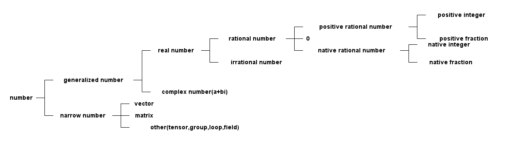
数的归纳
多项式
概念
- 最大公因式：设f(x), g(x)是P[x]中两个多项式。P[x]中多项式d(x)称为f(x), g(x)的一个最大公因式，如果它满足
- d(x)是f(x)，g(x)的公因式；
- f(x)，g(x) 的公因式全是d(x)的因式；
- 多项式互素：P[x]中两个多项式f(x)，g(x)称为互素(互质)，如果(f(x), g(x))=1; ((f(x), g(x))表示首项系数是1的最大公因式)；
- 重因式：不可约多项式p(x)称为多项式f(x)的k重因式，如果\(p^{k}x | f(x)\)，而\(p^{k+1}x ! f(x)\); (g(x)|f(x)表示g(x)能整 除f(x)) ;
- 多项式微商: 对多项式求导；
- 本原多项式：如果一个非零的整系数多项式\(g(x)=b_{n}x^{n}+b_{n-1}x^{n-1}+……+b_{0}\) 的系数\(b_{n}, b_{n-1}, ……，b_{0}\) 没有异于±1的公因子，也就说它们是互素的，这个多项式被称为本原多项式；
- 本原多项式定理(高斯引理)：两个本原多项式的乘积还是本原多项式；
- 对称多项式：设\(f(x_{1}, x_{2}, ……, x_{n})\)是数环R上一个n元多项式，如果对于这n个文字\(x_{1}, x_{2}, ……, x_{n}\)的 指标集{1, 2, ……, n}施行任意置换后，\(f(x_{1}, x_{2}, ……, x_{n})\)都不改变，那么就称\(f(x_{1}, x_{2}, ……, x_{n})\) 是R上一个n元对称多项式；
满足定律
- 加法交换律, f(x)+g(x)=g(x)+f(x)；
- 加法结合律, (f(x)+g(x))+h(x) = f(x)+(g(x)+h(x));
- 乘法交换律, f(x)g(x)=g(x)f(x);
- 乘法结合律, (f(x)g(x))h(x)=f(x)(g(x)h(x));
- 乘法对加法的分配律, f(x)(g(x)+h(x))=f(x)g(x)+f(x)h(x);
- 乘法消去律, f(x)g(x)=f(x)h(x)且f(x) \(\neq\) 0, 那么g(x)=h(x);
- 任何n(n>0)次多项式在复数域中有n个根(重根按重数计算)
公式
- 多项式乘法，f(x)g(x) = \(\sum_{i=0}^{n}a_{i}x^{i}\) \(\sum_{j=0}^{m}b_{j}x^{j}\) = \(\sum\limits_{s=0}^{m+n}(\sum\limits_{i+j}a_{i}b_{j})x^{s}\)
- 多项式微商：
- (f(x)+g(x))' = f'(x) + g'(x);
- (cf(x))' = cf'(x);
- (f(x)g(x))' = f'(x)g(x) + f(x)g'(x);
- \((f^{m}(x))' = mf^{m-1}(x)f'(x)\)
应用
- 多项式拟合
- 概念：根据给定的m个点，并不要求这条曲线经过这些点，而是y=f(x)的近似曲线y=\(\Phi(x)\)；
机器学习
算法
cordic算法
三角函数的计算是个复杂的主题，有计算机之前，人们通常通过查找三角函数表来计算任意角度的三角函数的值。这种表格在人们刚刚产 生三角函数的概念的时候就已经有了，它们通常是通过从已知值（比如sin(π/2)=1）开始并重复应用半角和和差公式而生成。现在有了 计算机，三角函数表便推出了历史的舞台。但是像我这样的喜欢刨根问底的人，不禁要问计算机又是如何计算三角函数值的呢。最容易想 到的办法就是利用级数展开，比如泰勒级数来逼近三角函数，只要项数取得足够多就能以任意的精度来逼近函数值。除了泰勒级数逼近之 外，还有其他许多的逼近方法，比如切比雪夫逼近、最佳一致逼近和Padé逼近等。所有这些逼近方法本质上都是用多项式函数来近似我 们要计算的三角函数，计算过程中必然要涉及到大量的浮点运算。在缺乏硬件乘法器的简单设备上（比如没有浮点运算单元的单片机）， 用这些方法来计算三角函数会非常的费时。为了解决这个问题，J. Volder于1959年提出了一种快速算法，称之为cordic(coordinate rotation digital computer) 算法，这个算法只利用移位和加减运算，就能计算常用三角函数值，如sin，cos，sinh，cosh等函数。 J. Walther在1974年在这种算法的基础上进一步改进，使其可以计算出多种超越函数，更大的扩展了Cordic 算法的应用。因为Cordic算 法只用了移位和加法，很容易用纯硬件来实现，因此我们常能在FPGA运算平台上见到它的身影。不过，大多数的软件程序员们都没有听说 过这种算法，也更不会主动的去用这种算法。其实，在嵌入式软件开发，尤其是在没有浮点运算指令的嵌入式平台（比如定点型DSP）上 做开发时，还是会遇上可以用到cordic 算法的情况的，所以掌握基本的cordic算法还是有用的。
背景
三角函数的计算是个复杂的主题，有计算机之前，人们通常通过查找三角函数表来计算任意角度的三角函数的值。这种表格在人们刚刚产 生三角函数的概念的时候就已经有了，它们通常是通过从已知值（比如sin(π/2)=1）开始并重复应用半角和和差公式而生成。 现在有了计算机，三角函数表便推出了历史的舞台。但是像我这样的喜欢刨根问底的人，不禁要问计算机又是如何计算三角函数值的呢。 最容易想到的办法就是利用级数展开，比如泰勒级数来逼近三角函数，只要项数取得足够多就能以任意的精度来逼近函数值。除了泰勒级 数逼近之外，还有其他许多的逼近方法，比如切比雪夫逼近、最佳一致逼近和Padé逼近等。 所有这些逼近方法本质上都是用多项式函数来近似我们要计算的三角函数，计算过程中必然要涉及到大量的浮点运算。在缺乏硬件乘法器 的简单设备上（比如没有浮点运算单元的单片机），用这些方法来计算三角函数会非常的费时。为了解决这个问题，J. Volder于1959年 提出了一种快速算法，称之为cordic(coordinate rotation digital computer) 算法，这个算法只利用移位和加减运算，就能计算常用 三角函数值，如sin，cos，sinh，cosh等函数。 J. Walther在1974年在这种算法的基础上进一步改进，使其可以计算出多种超越函数， 更大的扩展了cordic 算法的应用。因为cordic 算法只用了移位和加法，很容易用纯硬件来实现，因此我们常能在fpga运算平台上见到它 的身影。不过，大多数的软件程序员们都没有听说过这种算法，也更不会主动的去用这种算法。其实，在嵌入式软件开发，尤其是在没有 浮点运算指令的嵌入式平台（比如定点型dsp）上做开发时，还是会遇上可以用到cordic 算法的情况的，所以掌握基本的cordic算法还是 有用的。
从二分查找法说起
先从一个例子说起，知道平面上一点在直角坐标系下的坐标（X,Y）=（100，200），如何求的在极坐标系下的坐标（ρ,θ）。用计算器 计算一下可知答案是（223.61，63.435），见图img-cordic1所示。

直角坐标系到极坐标系的转换
为了突出重点，这里我们只讨论X和Y都为正数的情况。这时\(θ=atan(y/x)\)。求θ的过程也就是求atan 函数的过程。cordic算法采用 的想法很直接，将（X，Y）旋转一定的度数，如果旋转完纵坐标变为了0，那么旋转的度数就是θ。坐标旋转的公式可能大家都忘了，这 里把公式列出了。设（x,y）是原始坐标点，将其以原点为中心，顺时针旋转θ之后的坐标记为（x’,y’）,则有如下公式： $$ f(x)=\left\{ \begin{aligned} x' & = & x\cos(\Theta) + ysin(\Theta) \\ y' & = & -x\sin(\Theta) + ycos(\Theta) \\ \end{aligned} \right. $$ 也可以写成矩阵形式： $$ {x' \choose y'}={cos(\Theta) \quad sin(\Theta) \choose -sin(\Theta) \quad cos(\Theta)}{x \choose y} $$ 如何旋转呢，可以借鉴二分查找法的思想。我们知道θ的范围是0到90度。那么就先旋转45度试试。 $$ {212.13 \choose 70.711} = {cos(45^{\circ}) \quad sin(45^{\circ}) \choose -sin(45^{\circ}) \quad cos(45^{\circ})}{100 \choose 200}$$ 旋转之后纵坐标为70.71，还是大于0，说明旋转的度数不够，接着再旋转22.5度（45度的一半）。 $${223.04 \choose -15.85} = {cos(45^{\circ}/2) \quad sin(45^{\circ}/2) \choose -sin(45^{\circ}/2) \quad cos(45^{\circ}/2)} {212.13 \choose 70.711} $$ 这时总共旋转了45+22.5=67.5度。结果纵坐标变为了负数，说明θ<67.5度，这时就要往回转，还是二分查找法的思想，这次转11.25度。 $${221.85 \choose 27.967} = {cos(-45^{\circ}/4) \quad sin(-45^{\circ}/4) \choose -sin(-45^{\circ}/4) \quad cos(-45^{\circ}/4)} {223.04 \choose -15.851} $$ 这时总共旋转了45+22.5-11.25=56.25度。又转过头了，接着旋转，这次顺时针转5.625度。 $${223.52 \choose 6.0874} = {cos(45^{\circ}/8) \quad sin(45^{\circ}/8) \choose -sin(45^{\circ}/8) \quad cos(45^{\circ}/8)} {221.85 \choose 27.967} $$ 这时总共旋转了45+22.5-11.25+5.625=61.875度。这时纵坐标已经很接近0了。我们只是说明算法的思想，因此就不接着往下计算了。计 算到这里我们给的答案是 61.875±5.625。二分查找法本质上查找的是一个区间，因此我们给出的是θ值的一个范围。同时，坐标到原点 的距离ρ也求出来了，ρ=223.52。与标准答案比较一下计算的结果还是可以的。旋转的过程图示如img-trans。
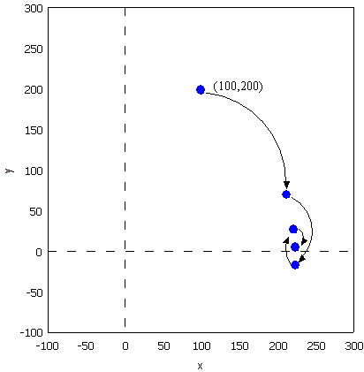
旋转过程图
可能有读者会问，计算中用到了sin函数和cos函数，这些值又是怎么计算呢。很简单，我们只用到很少的几个特殊点的sin 函数和 cos 函数的值，提前计算好存起来，用时查表。
#include <stdio.h>
#include <stdlib.h>
double my_atan2(double x, double y);
int main(void)
{
double z = my_atan2(100.0, 200.0);
printf("\n z = %f \n", z);
return 0;
}
double my_atan2(double x, double y)
{
const double sine[] = {0.7071067811865,0.3826834323651,0.1950903220161,0.09801714032956,
0.04906767432742,0.02454122852291,0.01227153828572,0.006135884649154,0.003067956762966
,0.001533980186285,7.669903187427045e-4,3.834951875713956e-4,1.917475973107033e-4,
9.587379909597735e-5,4.793689960306688e-5,2.396844980841822e-5
};
const double cosine[] = {0.7071067811865,0.9238795325113,0.9807852804032,0.9951847266722,
0.9987954562052,0.9996988186962,0.9999247018391,0.9999811752826,0.9999952938096,
0.9999988234517,0.9999997058629,0.9999999264657,0.9999999816164,0.9999999954041,
0.999999998851,0.9999999997128
};
int i = 0;
double x_new, y_new;
double angleSum = 0.0;
double angle = 45.0;
for(i = 0; i < 15; i++)
{
if(y > 0)
{
x_new = x * cosine[i] + y * sine[i];
y_new = y * cosine[i] - x * sine[i];
x = x_new;
y = y_new;
angleSum += angle;
}
else
{
x_new = x * cosine[i] - y * sine[i];
y_new = y * cosine[i] + x * sine[i];
x = x_new;
y = y_new;
angleSum -= angle;
}
printf("Debug: i = %d angleSum = %f, angle = %f\n", i, angleSum, angle);
angle /= 2;
}
return angleSum;
}
程序运行的输出结果如下：
Debug: i = 0 angleSum = 45.000000, angle = 45.000000 Debug: i = 1 angleSum = 67.500000, angle = 22.500000 Debug: i = 2 angleSum = 56.250000, angle = 11.250000 Debug: i = 3 angleSum = 61.875000, angle = 5.625000 Debug: i = 4 angleSum = 64.687500, angle = 2.812500 Debug: i = 5 angleSum = 63.281250, angle = 1.406250 Debug: i = 6 angleSum = 63.984375, angle = 0.703125 Debug: i = 7 angleSum = 63.632813, angle = 0.351563 Debug: i = 8 angleSum = 63.457031, angle = 0.175781 Debug: i = 9 angleSum = 63.369141, angle = 0.087891 Debug: i = 10 angleSum = 63.413086, angle = 0.043945 Debug: i = 11 angleSum = 63.435059, angle = 0.021973 Debug: i = 12 angleSum = 63.424072, angle = 0.010986 Debug: i = 13 angleSum = 63.429565, angle = 0.005493 Debug: i = 14 angleSum = 63.432312, angle = 0.002747 z = 63.432312
减少乘法运算
现在已经有点cordic算法的样子了，但是我们看到没次循环都要计算4次浮点数的乘法运算，运算量还是太大了。还需要进一步的改 进。改进的切入点当然还是坐标变换的过程。我们将坐标变换公式变一下形。 $${x' \choose y'} = {cos(\Theta) \quad sin(\Theta) \choose -sin(\Theta) \quad cos(\Theta)} {x \choose y} = cos(\Theta){1 \quad tan(\Theta) \choose -tan(\Theta) \quad 1}{x \choose y}$$ 可以看出 cos(θ)可以从矩阵运算中提出来。我们可以做的再彻底些，直接把 cos(θ) 给省略掉。省略cos(θ)后发生了什么呢，每次旋 转后的新坐标点到原点的距离都变长了，放缩的系数是1/cos(θ)。不过没有关系，我们求的是θ，不关心ρ的改变。这样的变形非常的 简单，但是每次循环的运算量一下就从4次乘法降到了2次乘法了。还是给出 C 语言的实现：
double my_atan3(double x, double y)
{
const double tangent[] = {1.0,0.4142135623731,0.1989123673797,0.09849140335716,0.04912684976947,
0.02454862210893,0.01227246237957,0.006136000157623,0.003067971201423,
0.001533981991089,7.669905443430926e-4,3.83495215771441e-4,1.917476008357089e-4,
9.587379953660303e-5,4.79368996581451e-5,2.3968449815303e-5
};
int i = 0;
double x_new, y_new;
double angleSum = 0.0;
double angle = 45.0;
for(i = 0; i < 15; i++)
{
if(y > 0)
{
x_new = x + y * tangent[i];
y_new = y - x * tangent[i];
x = x_new;
y = y_new;
angleSum += angle;
}
else
{
x_new = x - y * tangent[i];
y_new = y + x * tangent[i];
x = x_new;
y = y_new;
angleSum -= angle;
}
printf("Debug: i = %d angleSum = %f, angle = %f, ρ = %f\n", i, angleSum, angle, hypot(x,y));
angle /= 2;
}
return angleSum;
}
计算的结果是：
Debug: i = 0 angleSum = 45.000000, angle = 45.000000, ρ = 316.227766 Debug: i = 1 angleSum = 67.500000, angle = 22.500000, ρ = 342.282467 Debug: i = 2 angleSum = 56.250000, angle = 11.250000, ρ = 348.988177 Debug: i = 3 angleSum = 61.875000, angle = 5.625000, ρ = 350.676782 Debug: i = 4 angleSum = 64.687500, angle = 2.812500, ρ = 351.099697 Debug: i = 5 angleSum = 63.281250, angle = 1.406250, ρ = 351.205473 Debug: i = 6 angleSum = 63.984375, angle = 0.703125, ρ = 351.231921 Debug: i = 7 angleSum = 63.632813, angle = 0.351563, ρ = 351.238533 Debug: i = 8 angleSum = 63.457031, angle = 0.175781, ρ = 351.240186 Debug: i = 9 angleSum = 63.369141, angle = 0.087891, ρ = 351.240599 Debug: i = 10 angleSum = 63.413086, angle = 0.043945, ρ = 351.240702 Debug: i = 11 angleSum = 63.435059, angle = 0.021973, ρ = 351.240728 Debug: i = 12 angleSum = 63.424072, angle = 0.010986, ρ = 351.240734 Debug: i = 13 angleSum = 63.429565, angle = 0.005493, ρ = 351.240736 Debug: i = 14 angleSum = 63.432312, angle = 0.002747, ρ = 351.240736 z = 63.432312
消除乘法运算
我们已经成功的将乘法的次数减少了一半，还有没有可能进一步降低运算量呢？还要从计算式入手。第一次循环时，tan(45)=1，所以第 一次循环实际上是不需要乘法运算的。第二次运算呢？ tan(22.5)=0.4142135623731,很不幸，第二次循环乘数是个很不整的小数。是否能对其改造一下呢？答案是肯定的。第二次选择22.5度是 因为二分查找法的查找效率最高。如果选用个在22.5到45度之间的值，查找的效率会降低一些。如果稍微降低一点查找的效率能让我们有 效的减少乘法的次数，使最终的计算速度提高了，那么这种改进就是值得的。 我们发现tan(26.565051177078)=0.5，如果我们第二次旋转采用26.565051177078度，那么乘数变为0.5，如果我们采用定点数运算的话 （没有浮点协处理器时为了加速计算我们会大量的采用定点数算法）乘以0.5就相当于将乘数右移一位。右移运算是很快的，这样第二次 循环中的乘法运算也被消除了。类似的方法，第三次循环中不用11.25度，而采用 14.0362434679265 度。tan(14.0362434679265)= 1/4 乘数右移两位就可以了。剩下的都以此类推。
tan(45)= 1 tan(26.565051177078)= 1/2 tan(14.0362434679265)= 1/4 tan(7.1250163489018)= 1/8 tan(3.57633437499735)= 1/16 tan(1.78991060824607)= 1/32 tan(0.8951737102111)= 1/64 tan(0.4476141708606)= 1/128 tan(0.2238105003685)= 1/256
还是给出C语言的实现代码，我们采用循序渐进的方法，先给出浮点数的实现（因为用到了浮点数，所以并没有减少乘法运算量，查找的 效率也比二分查找法要低，理论上说这个算法实现很低效。不过这个代码的目的在于给出算法实现的示意性说明，还是有意义的）。
double my_atan4(double x, double y)
{
const double tangent[] = {1.0, 1 / 2.0, 1 / 4.0, 1 / 8.0, 1 / 16.0,
1 / 32.0, 1 / 64.0, 1 / 128.0, 1 / 256.0, 1 / 512.0,
1 / 1024.0, 1 / 2048.0, 1 / 4096.0, 1 / 8192.0, 1 / 16384.0
};
const double angle[] = {45.0, 26.565051177078, 14.0362434679265, 7.1250163489018, 3.57633437499735,
1.78991060824607, 0.8951737102111, 0.4476141708606, 0.2238105003685, 0.1119056770662,
0.0559528918938, 0.027976452617, 0.01398822714227, 0.006994113675353, 0.003497056850704
};
int i = 0;
double x_new, y_new;
double angleSum = 0.0;
for(i = 0; i < 15; i++)
{
if(y > 0)
{
x_new = x + y * tangent[i];
y_new = y - x * tangent[i];
x = x_new;
y = y_new;
angleSum += angle[i];
}
else
{
x_new = x - y * tangent[i];
y_new = y + x * tangent[i];
x = x_new;
y = y_new;
angleSum -= angle[i];
}
printf("Debug: i = %d angleSum = %f, angle = %f, ρ = %f\n", i, angleSum, angle[i], hypot(x, y));
}
return angleSum;
}
程序运行的输出结果如下：
Debug: i = 0 angleSum = 45.000000, angle = 45.000000, ρ = 316.227766 Debug: i = 1 angleSum = 71.565051, angle = 26.565051, ρ = 353.553391 Debug: i = 2 angleSum = 57.528808, angle = 14.036243, ρ = 364.434493 Debug: i = 3 angleSum = 64.653824, angle = 7.125016, ρ = 367.270602 Debug: i = 4 angleSum = 61.077490, angle = 3.576334, ρ = 367.987229 Debug: i = 5 angleSum = 62.867400, angle = 1.789911, ρ = 368.166866 Debug: i = 6 angleSum = 63.762574, angle = 0.895174, ρ = 368.211805 Debug: i = 7 angleSum = 63.314960, angle = 0.447614, ρ = 368.223042 Debug: i = 8 angleSum = 63.538770, angle = 0.223811, ρ = 368.225852 Debug: i = 9 angleSum = 63.426865, angle = 0.111906, ρ = 368.226554 Debug: i = 10 angleSum = 63.482818, angle = 0.055953, ρ = 368.226729 Debug: i = 11 angleSum = 63.454841, angle = 0.027976, ρ = 368.226773 Debug: i = 12 angleSum = 63.440853, angle = 0.013988, ρ = 368.226784 Debug: i = 13 angleSum = 63.433859, angle = 0.006994, ρ = 368.226787 Debug: i = 14 angleSum = 63.437356, angle = 0.003497, ρ = 368.226788 z = 63.437356
有了上面的准备，我们可以来讨论定点数算法了。所谓定点数运算，其实就是整数运算。我们用256 表示1度。这样的话我们就可以精确 到1/256=0.00390625 度了，这对于大多数的情况都是足够精确的了。256 表示1度，那么45度就是 45*256 = 115200。其他的度数以此类 推, 迭代次数见表\ref(tbl-dedaicishu)。
| number | angle | anglex256 | integer |
|---|---|---|---|
| 1 | 45.0 | 11520 | 11520 |
| 2 | 26.565051177078 | 6800.65310133196 | 6801 |
| 3 | 14.0362434679265 | 3593.27832778918 | 3593 |
| 4 | 7.1250163489018 | 1824.00418531886 | 1824 |
| 5 | 3.57633437499735 | 915.541599999322 | 916 |
| 6 | 1.78991060824607 | 458.217115710994 | 458 |
| 7 | 0.8951737102111 | 229.164469814035 | 229 |
| 8 | 0.4476141708606 | 114.589227740302 | 115 |
| 9 | 0.2238105003685 | 57.2954880943458 | 57 |
| 10 | 0.1119056770662 | 28.647853328949 | 29 |
| 11 | 0.0559528918938 | 14.3239403248137 | 14 |
| 12 | 0.027976452617 | 7.16197186995294 | 7 |
| 13 | 0.01398822714227 | 3.58098614841984 | 4 |
| 14 | 0.006994113675353 | 1.79049310089035 | 2 |
| 15 | 0.003497056850704 | 0.8952465537802 | 1 |
int my_atan5(int x, int y)
{
const int angle[] = {11520, 6801, 3593, 1824, 916, 458, 229, 115, 57, 29, 14, 7, 4, 2, 1};
int i = 0;
int x_new, y_new;
int angleSum = 0;
x *= 1024;// 将 X Y 放大一些，结果会更准确
y *= 1024;
for(i = 0; i < 15; i++)
{
if(y > 0)
{
x_new = x + (y >> i);
y_new = y - (x >> i);
x = x_new;
y = y_new;
angleSum += angle[i];
}
else
{
x_new = x - (y >> i);
y_new = y + (x >> i);
x = x_new;
y = y_new;
angleSum -= angle[i];
}
printf("Debug: i = %d angleSum = %d, angle = %d\n", i, angleSum, angle[i]);
}
return angleSum;
}
计算结果如下:
Debug: i = 0 angleSum = 11520, angle = 11520 Debug: i = 1 angleSum = 18321, angle = 6801 Debug: i = 2 angleSum = 14728, angle = 3593 Debug: i = 3 angleSum = 16552, angle = 1824 Debug: i = 4 angleSum = 15636, angle = 916 Debug: i = 5 angleSum = 16094, angle = 458 Debug: i = 6 angleSum = 16323, angle = 229 Debug: i = 7 angleSum = 16208, angle = 115 Debug: i = 8 angleSum = 16265, angle = 57 Debug: i = 9 angleSum = 16236, angle = 29 Debug: i = 10 angleSum = 16250, angle = 14 Debug: i = 11 angleSum = 16243, angle = 7 Debug: i = 12 angleSum = 16239, angle = 4 Debug: i = 13 angleSum = 16237, angle = 2 Debug: i = 14 angleSum = 16238, angle = 1 z = 16238
16238/256=63.4296875度，精确的结果是63.4349499度，两个结果的差为0.00526，还是很精确的。 到这里cordic算法的最核心的思想就介绍完了。当然，这里介绍的只是cordic算法最基本的内容，实际上，利用cordic 算法不光可以 计算 atan 函数，其他的像 sin，cos，sinh，cosh 等一系列的函数都可以计算，不过那些都不在本文的讨论范围内了。另外，每次旋转 时到原点的距离都会发生变化，而这个变化是确定的，因此可以在循环运算结束后以此补偿回来，这样的话我们就同时将（ρ,θ）都计 算出来了。
k临近算法
K临近算法主要采用将一定的样本，规划为已知的标签，每个样本针对标签有若干的特征值，然后当有新的样本点时，计算新样本点到已 知样本的距离，然后选取前K个距离最近的样本的标签进行投票，得票最多的标签作为该样本的标签。实例代码如下，我们有由 createDataSet函数生成一个测试样本和标签集，其中array的每个元素代表一个已知样本，而每个已知样本的各个元素代表其特征值， labels给出了group的每个样本的标签；现通过classify0函数将新样本inX归类到某个标签上。 注意: 要运行必须要删除所有的中文注 释。
import numpy as np
import scipy as sp
import operator
def createDataSet():
group = np.array([[1.0, 1.1], [1.0, 1.0], [0, 0], [0, 0.1]])
labels = ['A', 'A', 'B', 'B']
return group, labels
# inX和dataSet的行向量应该是一致的
# 每个行代表一个样本
def classify0(inX, dataSet, labels, k):
# dataSet是一个numpy array，shape属性包含行数和列数，比如shape[0]给出函数，shape[1]给出列数，这里我们需要行数，它对
# 应于观察点(dataSet)的数目，列数对应每个点对应的特征项
dataSetSize = dataSet.shape[0]
# inX是一个list，这一行表示将inX复制总共dataSetSize次，tile函数第一个参数表示需要复制的量，第二个参数表示需要负责的
# 形式，也就是说将inX复制dataSetSize行，1列，其维度满足dataSet
matrExt = tile(inX, (dataSetSize, 1))
# 开始计算inX和dataSet中每个样本的距离
diffMat = matrExt - dataSet
sqDiffMat = diffMat**2
# 以列维度相加, 如果axis=0, 将以行维度进行相加，如果直接用sum()将会计算所有元素的和
sqDistances = sqDiffMat.sum(axis=1)
distances = sqDistances**0.5
# argsort函数返回数组值从小到大的索引值
sortedDistInddicies = distances.argsort()
# 建立一个空字典/哈希表/映射:键值为label;值为每个label出现的频率
classCount={}
# 这里主要进行投票
for i in range(k):
# 寻找到前K个距离最近点的标签，然后对每个标签在字典classCount里面统计出现的次数
voteIlabel = labels[sortedDistInddicies[i]]
# dict.get(key, default=None)
# key 字典中要查找的键。default 如果指定键的值不存在，返回该默认值值。
# 已labels为标签下标，统计每个标签所出现的频率
classCount[voteIlabel]=classCount.get(voteIlabel, 0)+1
# 最终得到的classCount大概长这样{'A': 3, 'C': 5, 'B': 2}，也就是意味着标签C出现的次数最多，目的就是要返回最多的，下
# 面这行代码将字典排序成list，大的在前
# classCount.items(), 将得到dict_items([('c', 5), ('b', 2), ('a', 3)])
# operator.itemgetter(1)定义了一个函数，获取对象上的值，必须要作用到对象上才行
# Python内置的排序函数sorted可以对list或者iterator进行排序;
# 综合来看下面先将classCount转化为list，元素为元组，然后key指定排序时使用的排序方法(元组的第1个元素)，由reverse指定
# 是逆序排序
# 最后sortedClassCount形如[('c', 5), ('a', 3), ('b', 2)]
sortedClassCount = sorted(classCount.items(), key=operator.itemgetter(1), reverse = True)
# 返回'c'
return sortedClassCount[0][0]
point0 = [0, 0]
g, l = createDataSet()
print("resualt: %r" %classify0(point0, g, l, 3))
协议
大族协议
ble
BLE采用星型拓扑结构，1个master最多连接3个slave，1个slave只能有1个master
controller物理层
- 频率带宽
- BLE使用频率为2.4GHz；
- BLE使用高斯频移键控(Gauss frequency-shift keying)作为调制方式，频移键控一个缺点是接收一个长的数值是一样的序列；
- 发送0，使用负的频偏，发送1，使用正的频偏，比如一个最小的频偏为180KHz，如果中心频率是2402MHz，那么0的传输频率是
2401.820MHz，1的传输频率是2402.180MHz；
- 传统蓝牙79个频带传输数据；
- BLE使用40个频段传输数据，每个频段的中心频率的计算公式：fc = 2402+2k, 从公式可以看出频带间隙为2MHz，最低频率为2402MHz， 最高频率为2480MHz；
- BLE的传输功耗必须小于ISM规定的免费频带的功耗，也就是功耗不能做的无限大，规定BLE的最大传输功耗为+10dBm(10mW)；
- BLE 的频率偏移容限也有规定，对于传输完1个完整的BLE包，每个传输频率相对于中心频率的偏移容限为 ±150KHz；
- 通道总共40个，3个为广播通道(37, 38, 39)，37个为数据通道(0~36)，广播通道上跑的是广播包，数据通道上跑的是数据包
- 跳频算法: 数据通道的跳频算法：f(n+1) = (fn + hop) mod 37;
- 接收灵敏度
- 接收灵敏度用 dBm 来衡量，规则规定 BLE 的接收灵敏度至少为 -70dBm，也就是说必须能够接收到 0.0000001mW 的电磁波信号，大多
数的产品都能做到 -90dBm 的灵敏度，即 1pW。
- 距离
- BLE的电磁波在空中主要的损耗来自路径损耗，经验公式：path loss = 40 + 25log（distance）, 如果发送功率为 -20dBm，接收机灵
敏度为-70dBm，则路径损失为50dB，则目前两设备的距离为 2.5 米, 具体如表tbl-pathloss-distance所示
路径损耗和距离的关系 path loss distance 50dB 2.5m 60dB 6.3m 70dB 16m 80dB 40m 90dB 100m 100dB 250m 110dB 630m
controller链路层
状态机有standby、advertising、scanning、initiating、connecting，其转换状态如图img-ll-state-matchine

链路层状态机
- standby状态
- 使用广播通道
- 被动扫描(passive scanning)
只是被动的接收广播数据，设备可以只配置接收机，不用配置发射机；
- 主动扫描(active scanning)
只要发现了新设备，就会发送"扫描请求"(scan request)，并接收新设备返回的扫描响应(scan response)；
- advertising状态
- 使用广播通道，之后设备变成slave；
- 在在链路层，广播通道可以传输的数据有2种：广播数据(advertising data)，扫描响应数据(scan response data);
- 在1次广播事件中，广播包在3个广播信道上同时发送, 如图img-adv-event；
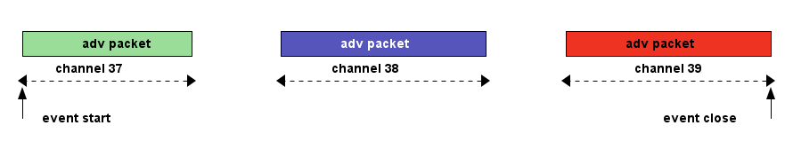
广播事件
- 广播间隔(adv interval)：两次广播事件之间的最小时间间隔，取值范围20ms~10.24s(20ms = 16*1.25ms, 10.24s=8192*1.25ms);
- 广播延时(adv delay):是一个随机数，取值0~10ms，实际上两次广播事件之间的时间是(adv interval+adv delay), 具体见图
img-adv-model, 在adv event time间，发送完adv后，将立马转到接收状态，看能否接收到SCANREQ or CONNREQ;
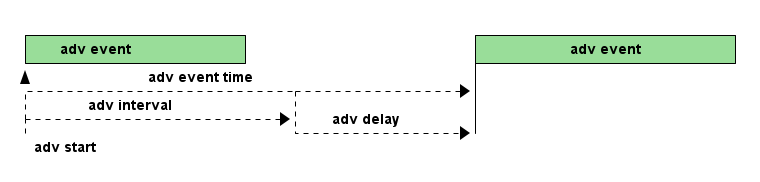
广播事件模型
- 4种广播分类：general、directed、nonconnectable、discoverable；
- general：当一个设备当前不是slave和master时，可以发送general的广播包，此类型广播可被连接；
- direct：当设备需要快速和别的设备进行连接时，这种广播包里面包含2个地址，一个是广播者自身的地址，一个是对方的地址(初始 化者)，当初始化设备接收到这个direct广播包时，立马在响应中发起一个链接请求；direct型广播有时间要求，如果这种广播持续 时间超过了，仍然没有设备进行连接，则BLE协议要求设备转为general型广播继续；发起direct型广播的设备不能被进行主动扫描， direct型广播包中也不能包含额外的数据，只能包含2个地址, 用来向特定的设备建立连接，此类型广播可被连接；
- nonconnectable：不能进行连接和扫描请求，只能在广播状态和挂起状态之间循环, 用来广播信息；
- discoverable：该型广播的设备，不能进入可连接状态，可以进入standby状态，但是可以被另一个设备进行scan request，然后回 复scan response，可以在该类型的广播包中包含动态数据，但是scan response中却只能包含静态数据；
- 4种广播类型：
- 可连接非定向广播(connectable undirected adv)：用于通用(general)广播，扫描响应时，任何其他设备都可以连接；
- 可连接定向广播(connectable directed ad):用于请求一个专门的设备连接，广播中不包含广播数据；
- 可扫描非定向广播(scannable undirected adv):用于广播数据和扫描响应数据给主动扫描的设备；
- 不可连接非定向广播(nonconnectable undirected adv):紧紧用于广播数据；
- scanning状态
使用广播通道- 被动扫描(passive scanning)：扫描者只监听广播频道的广播包，接收到广播包后，上传到host层；
- 主动扫描(active scanning):扫描者监听广播频道的广播包，接收到广播包后，回应一个"scann req"包，广播者则响应一个"scan
rsp"包，如图img-active-scan-flow；
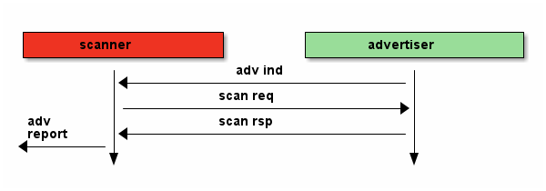
主动扫描流程
- initiating状态
- 使用广播通道；
- 之后设备变成master；
- connecting状态
连接过程：当一个设备使用可连接广播包(general型、direct型)进行广播时，设备(初始化者，initiator)可以发起一次连接请求进行连 接，在每个连接事件期间，mater先发起通信，slave会在150us后做出回应(此150s用于半导体冷却，以便能够无误差的转入接收状态，被 定义为TIFS)；连接请求包(连接参数)包含如下内容，master可以随时给slave发送连接参数更新请求，来改变任何连接参数，在链路层 连接参数更新请求总是master发起，但是L2CAP层允许slave向master发送1个连接参数更新请求，master再向slave发送具体的更新请求； 即使没有数据要传输，连接事件依然要进行(除了slave latency)，确保对方还在线。- 在连接时使用的access address：由master决定，如果master有多个slave，则master需要为每个slave维持一个access address；
- CRC初始值；
- 传输窗口值(transmit window size)：该计时在发送完连接请求后再延时（1.25ms+Transmit window offset)后，就开始计时，在这个
窗口开始计时时，设备就打开接收机开始接收包，如果在此窗口期内都没有接收到数据包，设备将终止接收，并在一个Conn
interval后重试，说白了就是决定接收机开多少时间；
- window size
- window interval
- 传输窗口偏移值(transmit window offset):是1.25ms的倍数，是一个值从0到Conn interval，说白了就是开启接收机时刻的前后偏移 时间；
- 连接间隙(conn interval):规定master和slave对话的频率，是两次连接事件开始之间的时间，1.25ms的倍数，7.5ms~4.0s之间, 模型
如图img-conn-model；
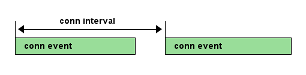
连接事件模型
- 跳连次数(slave latency):0~499之间，不能超过((Supervision timeout/Conn interval) - 1)，即比最大连接次数少1次；
- 连接超时值(supervision timeout)：10ms的倍数，100ms~32.0s之间，且必须大于(1+Slave latency)*(Conn interval)，即比最大忽 略次数多1次，如果连接超时，则返回广播or扫描or待机模式，如果Supervision timeout = 32s，conn interval是100ms，则在不超时 情况下最多可以传输320个conn event，则slave latency最多319个;
- channel map:37bit的bit map指示37个数据通道中哪些是bad(0)哪些是good(1)，
- frequency-hop algorithm increment:5~16之间的随机数，参与通道选择；
- sleep clock accuracy:表示master要求slave的时钟精度要求，从而决定连接事件的不确定窗口，好像跟transmit window offset有关；
- master
- 一个设备不能既是master，又是slave；
- 一个已经是master的设备，不能再广播可连接的广播包，但是可以广播不可连接的广播包；
- slave
- 一个设备不能同时是多个master的的slave；
- 一个已经是slave的设备，不能再广播可连接的广播包；
- 传统蓝牙设备却可以多个slave对一个master；
- 包(package)
- preamble 要么是0b01010101要么是0b10101010;
- access address
用于减少背景噪声被误读。
- advertising access address: 用于广播数据或者扫描或者初始化连接，固定为0x8E89BED6，这个数字具有很好的相关性；
- data access address: 用于两设备已经建立连接后的数据传输，具体值是一个随机数；
- header 头部的内容又是由是否是广播包或者数据包来决定；
- 广播包类型：
- ADV_IND:通用广播，说明自己是可以被连接的，广播中带有自己的地址，此类型广播可被连接；
- ADV_DERECT_IND:直接连接广播，用来向特定的设备建立连接，此类型广播可被连接；
- ADV_NONCONN_IND:不可连接广播，用来广播信息；
- ADV_SCAN_IND:可扫描广播
- SCAN_REQ:主动扫描请求
- SCAN_RSP:主动扫描响应
- CONNECT_REQ:连接请求
- 数据包包头：
- LLID: logical link identifier，决定数据包的类型，取值：
- 0b11：链路层控制包，用于管理连接，此包的数据直接传给链路层，不再上传给host；
- 0b10：链路层包只能装27B数据，而高层可以发送大于27B的数据, 分成若干个等于或小于27B的链路层包，为了标识高层数据的 开始，用此类型包，也表示上一个高层包完毕 。
- 0b01：标识高层数据的继续，见图img-llid-use, 可以利用此包一直发送0包；

llid用途
- SN: 序列号，只有1个bit，0和1交替变换，用于决定收到的包是一个新包还是一个重传包，每次连接事件都清0，说白了就是表示我 的包现在SN是啥，那么你给我发的包的NESN就要跟我的SN变换一下，我的NESN表示我下一包给你发的和你现在的SN不一样就对了， 如果一样就表示错了，要重发；
- NESN：下一个期望的序列号，用于发送设备告诉接收设备下一包的SN，如果接收设备当前的SN=0，那么接收到的包的NESN一定要是1 才行，这样才能使发送设备在下一包保证接收设备的SN是交替变换的，也表示接收到的包是正确的，否则表示此包需要重传，每次 连接事件都清0；
- MD：more data，用于通知接收设备是否还有数据要发送，1表示让接收设备继续开着接收机准备接收，0表示接收机可以立马关闭节 约功耗；
- LLID: logical link identifier，决定数据包的类型，取值：
- length 对于广播包，length域由6bit构成，有效值从6到37，对于数据包length域由5bit构成，有效值从0到31，对于广播包和数据包，其实 际数据域负载是0到31字节，广播包还需要包含6字节的广播地址，所以是6到37，所以需要6bit, 然后实际情况却是27字节，因为BLE一 般采用加密传输，加密传输时，在数据域负载后面，CRC前面还有4字节的消息完整性校验值MIC，所以此时负载就只有27字节了，然后 BLE设计时为了降低复杂性，将非加密传输也统一为27字节，所以才有说BLE传输一包的数据最多27字节；
- payload
- crc 计算内容header、length、payload，计算式子：CRC=x24+x10+x9+x6+x4+x3+x1+x0; 一个包是否接收正确，使用crc做唯一的 判断标准，只有加密传输时是否正确，那是加密层的事；
- 1个广播包可以包含多个AD structure型数据，AD structure结构：1字节长度+AD类型+AD data，由于有些设备只关心其中某些，所以 需要用长度和类型来确定这个AD structure的数据范围；
- 数据传输效率：数据传输通道上的包PDU = header(2B)+payload(27B max)=29B, 则最大包长length=preamble(1B)+access addr(4B)+ PDU(29B)+CRC(3B)= 41B, 协议规定BLE射频PHY传输速率1Mbps(1us per 1bit)，则一个有效27B的传输耗时41*8bit*1us=328us, 一个 27B的传输周期：328+150+80+150=708us
- 配对绑定(pairing bonding)
详细过程参考https://community.freescale.com/thread/332191 ;包的CRC值计算加密的payload数据，另外，header和length域不做加 密，BLE中的加密和认证使用AES引擎，加密时不使用SN、NESN、MD信息，所以加密payload时可以在任何时候，不用在传输时实时加密， 有助于降低峰值功耗，AES作用：- 加密payload数据，加密的数据包格式如图img-encry-data，其中MIC是message integrity check，消息完整性值；
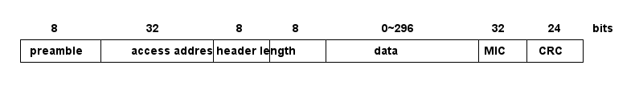
加密数据包格式
- 计算消息的完整性值；
- 签名数据
- 生成私有地址；
配对密钥的生成过程如图img-encry-procedure所示, SKD(session key diversifier)，IV向量，LTK(long-term key)用于生成
会话的会话密钥(session key)，而链路的加密使用session key; master和slave双方都要提供一个4直接的IV(组成8直接的IV)，一
个8字节的SKD(组成16字节)，而slave可以从LL ENC REQ这个请求的信息中推测出LTK，所以slave可以不用存储绑定信息，并且由于会
话密钥中需要SKD，所以LTK可以长期使用，session key的计算公式：SK = E_LTK (SKD_master || SKD_slave); AES要工作还需要初
始化向量IV，IV的计算公式 IV = IV_master || IV_slave ;在做具体的加密数据传输前，需做3次会话，见图
img-encry-procedure中的LL_START_ENC_RSP；当一个加密连接已经建立后，还可以通过LL_ENC_REQ(SKD)重启一个加密连接，此
时的session key将更新，但是这个请求一般甚少使用；总结下配对过程：
- 交换配对信息：通过pairing req和pairing rsp来交换；
- 认证连接：此步将生成一个TK，进一步利用TK交换出STK；
- 分发密钥:使用STK分发密钥信息, 包括LTK、EDIV、Rand、IRK、CSRK；
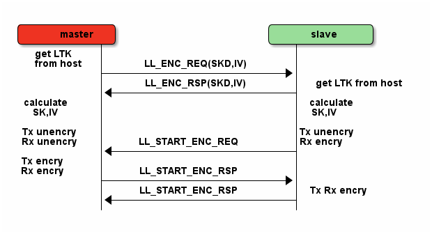
加密过程初始化
配对和绑定的区别：简单解释是，配对是双方安全特征(security feature)的交换和临时加密连接的生成；绑定是一个长期密钥的交换 (在绑定后) ，并存储这些密钥以便以后使用；
- 配对:是安全特征的交换，包括i/o能力，防中间人攻击的需求，密钥size等等，client端(master)发起交换；一旦配对特征交换完成， 一个临时密钥将生成并交换，链路将被加密，后续数据将进行加密传输；在这个临时加密连接中，将交换一个长期密钥(long term key), 它可以用于加密链接，也可以用于签名数据；
- 绑定：将配对后，交换的long term key进行存储(如果不存储也行，只是就不能进行绑定了)，并在下一次连接时使用之；如果绑定了， 则下次连接时，就可以不用进行敏感安全信息的交换，就能加密链接，只需要master发送一个“开始加密请求”，双方就会使用存储下 来的key来进行加密传输；
SMP(Security Manager Protocol)使用5种KEY工作，使用3种配对模式产生TK，进一步产生STK，利用STK加密传输LTK，CSRK，IRK：
- LTK：long-term key，用于产生每个链路层连接时的会话密钥(session key)，说白了就是后续数据传输时使用的加密密钥
- TK:temporary key，可以根据配对模式采用3种方式生成，Just Works，OOB，Passkey Entry，如表tbl-tk-gen；基于
SSP(secure simple pairing)的配对模式总共有4种，所谓的SSP，就是利用一定的信息来产生密钥，但是不能由此来解开密文；
- Numeric Comparison：这种就是在两个设备上显示一个6位数的数字，然后双方只需要点击"YES or NO"就能配对；
- Just Works：类似Numeric Comparison，只是没有显示屏和输入设备，默认选YES；
- Passkey Entry：一个有显示设备，一个有输入设备，显示设备上显示一个数字，然后在输入设备上输入就配对；
- Out Of Band：利用其他技术进行配对，比如NFC；
配对模式 Pairing Method TK 防中间人攻击 注意 Just Works 0 NO No authentication Passkey Entry 0 … 999999 YES Authenticated Interface allows displaying entering values Out Of Band Usually a full 128 bit key YES Authenticated - STK:short-term key, 用于2个设备第一次配对时加密链接，STK = AES128 (TK, Srand || Mrand)，Srand由发起者产生，Mrand由响应 者产生；
- CSRK: connection signature resolving key, 用于签名一个未加密的数据；比如一条连接没有进行加密，数据可以以明文传输，但是 可以对其使用CSRK进行签名附在数据后面，则接收方可以利用CSRK验签这些未加密的数据，保证发送方可信；
- IRK:identity resolving key, 用于产生和校验Random Resolvable Private Addresses，hash = AES128(IRK, prand), 其中 random_address = [hash || prand || 0b10]，说白了就是产生address的；
- 加密payload数据，加密的数据包格式如图img-encry-data，其中MIC是message integrity check，消息完整性值；
controller HCI层
HCI分物理接口和逻辑接口，逻辑接口定义了一系列的命令包格式，物理接口还定义了这些命令包如何在host和controller间传输；
- 连接句柄(connection handle): 当连接时，会产生一个HCI通道，这个通道被叫做连接句柄，可以用于标注数据包的来源和目的地；
host l2cap层
L2CAP：logical link control and adaptation protocol，它为上层提供面向连接和无连接的数据服务，并提供多协议功能和分割重组 操作，L2CAP允许上层协议和应用软件传输和接收最大长度64K的L2CAP数据包；
attribute
一个attribute包含3要素：attribute handle/attribute type/attribute value，一般还要包含attribute permission；
- attribute handle：可以区分同类(type)的attribute，通常使用16bit的地址来标志，取值从0x0001~0xFFFF, 0x0000保留；可以是为 存储器地址，但也可以是端口号等；
- attribute type：使用UUID来表示，用于识别不同的事务，比如温度/压力/距离等；UUID可以有128bit的，也可以有16bit的，使用
16bit的UUID时，可以转换到128bit，使用一个基UUID，00000000-0000-1000-8000-00805F9B34FB，比如16bit的UUID为0x2A01, 则
128bit的UUID为00002A01-0000-1000-8000-00805F9B34FB; BLE中16bit的UUID分类如表tbl-ble-uuid； 另外attribute type指
的就是declaration共有：primary service/secondary service/include/characteristic。
BLE的UUID分类 范围 作用 说明 0x1800~0x26FF service UUID Battery Service：0x180F 0x2700~0x27FF units 时间单位秒:0x2703 0x2800~0x28FF attribute type 就是declaration: 0x2900~0x29FF character descriptor 就是描述符descriptor 0x2A00~0x7FFF character type 就是具体的属性：device name - attribute value 一个attribute value可以使用的空间为(0~512byte);
- attribute数据库：一个最小的attribute数据库(6 attributes)必须包含最基本的项, 见表tbl-smallest-db
最小的attribute数据库 attribute handle attribute type attribute value 0x01 Primary Service GAP service 0x02 Characteristic Device Name 0x03 Device Name "value" 0x04 Characteristic Appearance 0x05 Appearance "value" 0x06 Primary Service GATT service - attribute permission
attribute permission只能用在attribute value上，不能用在type和handle上，一般又分为access permission/authentication
permission/authorization permission;
- access permission:决定哪类请求可以用在attribute上，请求类别有如下，其中同步操作意味着发起一个request必须得到一个
response才能进行第二次request，发起一个indication必须得到一个confirm才能进行另一个indication，而write command和
notification则不需要有回应，另外在发起request或indication，还未得到response和confirm期间，还能继续发起write command
和notification；
- find request；发现数据库中的attribute，server会给出response，同步操作(必须要得到response，才能进行第二个命令)；
- read request：读attribute value，server会给出response，同步操作；
- write request：写attribute value，server会给出response，同步操作；
- prepare write request：预写请求，当需要写入一个长的attribute 的value时，可以用，此请求包含写入数据的偏移地址，是 个原子操作，也就是需要写入完才能真正执行；
- execute write request：执行写入请求，也许和上面的预写请求相配合的；
- indication：can be sent anytime，client必须给出确认收到，同步操作；
- write command：写attribute value，server不会给出response，异步操作;
- notification：can be sent anytime，没有回应，异步操作；
- authentication(身份鉴定) permission: 决定哪个设备有权利操作attribute，分为authentication require/no authentication require，如果身份没有鉴定时访问attribute，则server可以使用SM层来鉴定client，client端(android)一般就会弹出要求输入 pin框的界面；
- authorization(授权) permission: server是否授权给client，如果没有被授权的client则不被允许访问，如果未授权，则client 端是没有弥补措施的(类似输入pin)；
- access permission:决定哪类请求可以用在attribute上，请求类别有如下，其中同步操作意味着发起一个request必须得到一个
response才能进行第二次request，发起一个indication必须得到一个confirm才能进行另一个indication，而write command和
notification则不需要有回应，另外在发起request或indication，还未得到response和confirm期间，还能继续发起write command
和notification；
secure
secure mode大体上分为2个级别，security mode 1和security mode 2，其中security mode 1针对于链接的加密与否(encryption)，其 下又分为3级，security mode 2针对于链接的签名与否(signing & encryption)，其下又分为2级, 在每次连接的生命周期中，都是从 security mode 1的level 1开始，在以后的进程中可以升级到其他级别，也可以降级，但是不能降到security mode 1的level 1；
- security mode 1
- level 1: 链接没有加密保护，链接没有保护措施，是open的；
- level 2: 链接有加密保护，但是此加密保护的密钥未作认证(unauthenticated)，即没有中间人攻击(MITM)的保护措施;
- level 3: 链接有加密保护，并且此加密保护的密钥已作认证(anthenticated)，具有MITM保护功能;
- security mode 2
- level 1: 链接有加密和签名保护, 但是此保护的密钥未作认证, 即没有MITM的保护功能；
- level 2: 链接有加密和签名保护，并且此保护的密钥已做认证，具有MITM的保护功能
android
当连接到Server的Gatt时(connectGatt())，将提供一个回调BluetoothGattCallback，里面的各个回调方法用于处理连接后的事务处理， 具体操作方法对应如表tbl-gatt-oper。
| 操作名称 | 操作代码 | 回调方法 |
|---|---|---|
| notification | gatt.setCharacteristicNotification() | onCharacteristicChanged() |
| 读Characteristic | gatt.readCharacteristic() | onCharacteristicRead() |
| 写Characteristic | gatt.wirteCharacteristic() | onCharacteristicWrite() |
| 可靠写操作 | executeReliableWrite() | onReliableWriteCompleted |
| 连接或者断开蓝牙 | … | onConnectionStateChange() |
| 读Descriptor | gatt.readDescriptor() | onDescriptorRead() |
| 写Descriptor | gatt.writeDescriptor() | onDescriptorWrite() |
| 读RSSI | gatt.readRemoteRssi() | onReadRemoteRssi |
| 发现服务 | gatt.discoverServices() | onServicesDiscovered |
| MTU改变 | requestMtu() | onMtuChanged() |
- android-ble梳理
- btle概念
正如其名，ble相对于经典bt，提供了类似的通信距离，然后却使用明显更少的功耗。ble设备会进入睡眠模式，并且只为连接尝试或者
连接事件而唤醒。由此，开发者需要理解少量的基本的ble概念，但是不用关注那些经典btsocket编程所需要做的。
- gatt profile 所有的ble设备实现一个或者多个profile。一个profile是一个高层次的定义，定义了一个服务如何被用于一个应用。ble的profile 是基于gatt的，这是一个通过低功耗连接发送和接收小段数据量的规则。
- client client是这样一个设备，它发起gatt命令并且接收响应。对于我们这个例子，android设备将充当客户端角色。然而，android ble api 确实可以让android设备充当服务端。
- server server是这样一个设备，它接收gatt命令或请求，并返回响应，比如，心率检测器，健康温度计，位置导航设备充当服务端。
- characteristic characteristic是一个在client和server之间传输的数据值。比如，除了心率测量仪，心率检测仪也能够报告它当前的电池电压，设 备名称或者序列号。
- service service是一组characteristic，他们组织在一起完成一个特定的功能。许多设备都实现了设备信息服务，这个服务是由许多特征值 构成的，比如制造商名称，模式号，序列号，固件版本号。
- descriptor descriptor提供特征值的一些额外的信息。比如，温度值特征值可能有单位和范围的指标，传感器能够测量的上限，下限值。
- attribute service，characteristic，descriptor集中到一起作为attribute，由uuid标识（128bit）。确实是128bit，一般你只需关注下面高 亮的16bit，这些数字被sig预定义:xxxxxxxx-xxxx-xxxx-xxxx-xxxxxxxxxxxx;
- gatt operation
下面是一些使用这些概念的操作例子 ，这些是一个客户端用于发现服务器信息的所有命令。
- 发现所有主服务的uuid，比如，这个操作可以被用于决定一个设备是否支持设备信息服务。
- 发现给定服务的所有特征值，比如，一些心率检测仪也包含一个人体位置传感器特征值。
- 读写特征值的描述符，最常用的描述符之一是客户端特征值配置描述符，这个允许客户端设置通知来指示或通知一个特有的特征值。
- 如果客户端设置了通知使能位，服务器只要信息是有效变化，都将发送给客户端。同理，设置了指示使能位，也能使得服务器当数 据有效时发送通知给客户端，但是指示模式也要求一个客户端的响应。
- 读写特征值。以心率检测仪为例，客户端会读取心率测量仪的特征值。或者客户端可能当更新远端设备的固件时，写入一个特征值。
- 在Android上实践
既然我们知道了BLE的基本概念，让我们标注一下操作它的关键步骤。再次重申，你使用的设备必须支持API18或者更高。
- AandroidManifest.xml
首先在你的manifest中声明下面的权限，BLUETOOTH权限允许你连接到一个设备，BLUETOOTH_ADMIN权限允许你发现设备。
<uses-permission android:name=“android.permission.BLUETOOTH” /> <uses-permission android:name=“android.permission.BLUETOOTH_ADMIN” /> <uses-feature android:name=“android.hardware.bluetooth_le” android:required=“true” />
- 获取BluetoothAdaptor并使能
下面的代码获取BluetoothAdaptor类，这个是设备发现所必要的，这段代码也检查android设备是否使能Bluetooth，并且如果没有使
能也会请求用户使能。注意，这段处理过程同连接到经典蓝牙需要做的一样，然后，过了这步，就不一样了。
BluetoothManager btManager = (BluetoothManager)getSystemService(Context.BLUETOOTH_SERVICE); BluetoothAdapter btAdapter = btManager.getAdapter(); if (btAdapter != null && !btAdapter.isEnabled()) { Intent enableIntent = new Intent(BluetoothAdapter.ACTION_REQUEST_ENABLE); startActivityForResult(enableIntent,REQUEST_ENABLE_BT); } - 设备发现
通常，连接到设备的第一步是设备发现，这是一个异步的过程，因此，我们必须要产生一个回调BluetoothAdaptor.LeScanCallback
的实现，每当发现一个设备都会回调。
private BluetoothAdapter.LeScanCallback leScanCallback = new BluetoothAdapter.LeScanCallback() { @Override public void onLeScan(final BluetoothDevice device, final int rssi, final byte[] scanRecord) { // your implementation here } }使用上面的实现，我们可以使用下面的方法调用，开始和停止设备发现
btAdapter.startLeScan(leScanCallback); btAdapter.stopLeScan(leScanCallback);
- 产生BluetoothGattCallback
既然你已经有了一个BluetoothDevice对象，下一步就是连接过程。这需要实例化BluetoothGattCallback类，在这个类中有许多有用
的方法，但是下面的代码关注一些必要的部分。
private final BluetoothGattCallback btleGattCallback = new BluetoothGattCallback() { @Override public void onCharacteristicChanged(BluetoothGatt gatt, final BluetoothGattCharacteristic characteristic) { // this will get called anytime you perform a read or write characteristic operation } @Override public void onConnectionStateChange(final BluetoothGatt gatt, final int status, final int newState) { // this will get called when a device connects or disconnects } @Override public void onServicesDiscovered(final BluetoothGatt gatt, final int status) { // this will get called after the client initiates a BluetoothGatt.discoverServices() call } }最后，使用下面的调用来初始一次连接。
BluetoothGatt bluetoothGatt = bluetoothDevice.connectGatt(context, false, btleGattCallback);
- 发现服务和特征值
假定连接尝试成功了，回调BluetoothGattCallback.onConnectionStateChange()将会被回调，其参数newState被设置为
BluetoothProfile.STATE_CONNECTED。这次事件后，发现服务可以被初始化了。正如名字隐含的，下面调用的目标是决定远端设备支
持哪个服务。
bluetoothGatt.discoverServices();
当设备回应时，你将会收到回调BluetoothGattCallback.onServicesDiscovered()，在你获得一系列支持的服务前，你必须处理这个 回调。并且一旦你有了设备支持的一系列服务，就可以使用下面的代码来获取那些服务的特征值 。
List<BluetoothGattService> services = bluetoothGatt.getServices(); for (BluetoothGattService service : services) { List<BluetoothGattCharacteristic> characteristics = service.getCharacteristics(); } - 配置描述符为通知（Notify）
到目前为止，我们已经连接到了设备，发现了它支持的服务，获得了每个服务下的一系列特征值。现在我们拥有了一些基本信息，让
我们做些有用的。以心率检测仪为例，我们希望仪器给我们发送有规律的用户心率。再看看之前谈到的Client Characteristic
Configuration Descriptor，它可以使能远端设备的通知功能。下面的代码描述了我们如何获得描述符，然后使能通知标签。
for (BluetoothGattDescriptor descriptor : characteristic.getDescriptors()) { //find descriptor UUID that matches Client Characteristic Configuration (0x2902) // and then call setValue on that descriptor descriptor.setValue( BluetoothGattDescriptor.ENABLE_NOTIFICATION_VALUE); bluetoothGatt.writeDescriptor(descriptor); }注意uuid值0x2902的引用，我们之前谈到的，16bit的uuid一般才是我们关注的。每个服务，特征值，描述符，都有uuid。
- 接收通知
那个心率监测仪发送了测量数据给android设备，你将接收到一个回调BluetoothGattCallback.onCharacteristicChanged(),下面的
代码展示了怎样接收那些那些数据。
@Override public void onCharacteristicChanged(BluetoothGatt gatt, final BluetoothGattCharacteristic characteristic) { //read the characteristic data byte[] data = characteristic.getValue(); } - 断开和关闭
在最后，要断开和关闭GATT客户端，使用下面的调用：
bluetoothGatt.disconnect(); bluetoothGatt.close();
- 注意点
- 在尝试连接时停止设备发现，正如上面说的，设备发现应该停止来阻止电池泄露。在尝试连接前停止设备发现会有助于获得更好 的连接结果。
- 轮询所有的GATT操作（连接尝试，设备发现，读写特征值），每次只执行一个，证据表明底层GATT操作不是排队执行的，有些还 会失败，如果你不自己处理。
- 当APP关闭时，用尽所有尝试来断开设备连接和关闭GATT客户端，如果会话继续保持开启，用户将可能很难进行设备重连接，除非 之前的连接超时，或者蓝牙被android系统回收，或者设备重启。
- 在初始化设备发现后，保存设备的MAC地址，参见BluetoothDevice.getAddress()，然后，下次用户想连接，使用这个地址来构建 BluetoothDevice，参见BlueAdaptor.getRemoteDevice(),这样可以避开设备发现，使得用户体验更平滑友好。
- AandroidManifest.xml
首先在你的manifest中声明下面的权限，BLUETOOTH权限允许你连接到一个设备，BLUETOOTH_ADMIN权限允许你发现设备。
- btle概念
正如其名，ble相对于经典bt，提供了类似的通信距离，然后却使用明显更少的功耗。ble设备会进入睡眠模式，并且只为连接尝试或者
连接事件而唤醒。由此，开发者需要理解少量的基本的ble概念，但是不用关注那些经典btsocket编程所需要做的。
usb
usb枚举过程
- usb检测到usb设备插入后，就会先对设备复位，usb设备在总线复位后其地址为0；
- usb主机通过控制传输发起获取设备描述符的标准请求，标准的设备描述符共18个字节，而usb主机第一次获取设备描述符时都只获取 前8个字节的设备描述符（到能够判断usb设备端点0的最大包长度）；
- 复位一次usb设备，进入地址设置阶段；
- SET_ADDRESS标准请求，设置地址（地址包含在此标准请求的wValue字段中）；
- 循环的试探usb设备支持的标志请求（如果某些标准请求不支持，usb主机会中断，并重复第5步）；
- 各个描述符
- GET_DESCRIPTOR获取设备描述符（全部18个字节）；
- GET_DESCRIPTOR获取配置描述符（前9个字节，可以知道有多少接口、端点、字符串描述符等）；
- GET_DESCRIPTOR获取字符串描述符（语言id）；
- GET_DESCRIPTOR获取字符串描述符（序列号serial number）；
- GET_DESCRIPTOR获取配置描述符（全部的配置描述符，包括接口、端点、类）；
- GET_DESCRIPTOR获取设备限定描述符（用于高速全速集成的设备，usb设备可能不支持，可能退到第5步重复，并跳过f）；
- GET_DESCRIPTOR获取字符串描述符（语言id）；
- GET_DESCRIPTOR获取字符串描述符（产品product）；
- GET_DESCRIPTOR获取报告描述符REPORTDESCRIPTOR（多用于HID等，usb设备可能不支持，退回到第5步重复，并跳过i）;
- SETCONFIGURATION设置配置值（wValue中的值为configuration中bConfigurationValue字段的值，在此之前usb主机将根据之前获取 的信息vendor id/product id等找到该usb设备的驱动程序）；
小族协议
spi
uart
i2c
硬件
数字电路
电平转换
现在低压、低耗器件越来越多，3.3v、2.1v电平信号越来越常见。这就存在了一个电平转换问题。当然很多时候都不需要转化，一些器件 具有较大的包容性。具体能不能包容多种电平需要查看IC手册。如果能容忍其相异的电压，就不需要交转换单元了。加上转换电路肯定会 对通信速度、稳定性有所限制。转化前要注意两个地方。
- ABSOLUTE MAXIMUM RATINGS
这个是保证IC安全、健康的限制参数，应用连接时千万别超过这个范围。比如：DVDD(模拟电源)对DGND(模拟地)电压范围是 -0.3V到 +6.0V ;数字I/O口电压对地电压范围是 -0.3V到+vdd+0.3V 。
- 需不需要电平信号转换单元就看下面这个参数
可见这个IC的数字逻辑输入低电平门限<0.7V(3.3V情况)；高电平门限>2V(3.3V情况)；当然这些参数都是限制在ABSOLUTE MAXIMUM RATINGS的。 下面转入正题，看看电平转换方法。
- 较低电平转较高电平（比如3.3V转5V）：
“低”接较低电平信号；“高”接较高电平信号。两个晶体管，保证两端信号极性一致。
- 较高电平转较低电平（比如5转3.3V）：
分析:当“高”处（+5V电平信号）输出为逻辑1，二极管截至（相当于断开），低处被上拉到约+3.3V。当“低”处（+5V电平信号）输出 为逻辑0，二极管导通，理想情况“低”处导通到0电压，实际“低”处电压是二极管导通压降（0.7V左右，如果觉得高，可以使用肖特基 二极管，肖特基二极管管压降小）。有一些电平信号转换可以采用比较器，我以前在一个比较器手册上看过这种应用，也十分方便，就是 成本有些高。一些网友说，可以在不同电平信号之间串一个小电阻解决问题。我也这样试过（3.3V的cyclon2与5V的单片机通信），好像 能正常使用，不过总感觉不太安稳，呵呵。 还有其他的一些方法总结如下：
- 电阻分压
利用电阻分压的方法,其原理如图1所示.其成本比较低并且结构简单,可以作为一种应急的方案.但是,该电路实际的输出电压显然要小于 3.3V,并且随着负载的变化,输出电压也会产生波动.此外,这种电路的无功功耗也比较大.
- 直接采用电源模块
考虑到开关电源设计的复杂性,一些公司推出了基于开关电源技术的低电压输出电源模块.这些模块可靠性和效率都很高,电磁辐射小,而且 许多模块还可以实现电源隔离.这些电源模块使用方便,只需增加很少的外围元件,但是价格比较昂贵.
- 利用线性稳压电源转换芯片
线性稳压芯片是一种最简单的电源转换芯片,基本上不需要外围元件.但是传统的线性稳压器,如LM317,要求输入电压比输出电压高2V或者 更大,否则就不能够正常工作.因此对于5V的输入,输出并不能够达到3.3V.面对低压电源的需求,许多电源芯片公司推出了低压差线性稳压 器(LDO).这种电源芯片的压差只有1.3V~0.2V,可以实现5V转3.3V的要求.LDO所需的外围器件数目少、使用方便、成本较低、纹波小、无电 磁干扰.例如,TI公司的TPS73xx系列就是TI公司为配合DSP而设计的电源转换芯片,其输出电流可以达到500mA,且接口电路非常简单,只需接 上必要的外围电阻,就可以实现电源转换.该系列分为固定电压输出的芯片和可调电压输出的芯片,但这种芯片通常效率不是很高. 综合几种电源的优缺点,DSP系统采用LDO芯片TPS7333.此芯片是TI公司专门为3.3V低压系统设计的,它是固定输出3.3V,且有上电产生DSP系 统复位所需的信号.此外它输出电流可达几百毫安,输出功率完全能够满足系统所需.具体电路如图2所示.
- 3.3V转5V 电平转换方法参考
- 晶体管+上拉电阻法
就是一个双极型三极管或 MOSFET，C/D极接一个上拉电阻到正电源，输入电平很灵活，输出电平大致就是正电源电平。
- OC/OD 器件+上拉电阻法
跟 1) 类似。适用于器件输出刚好为 OC/OD 的场合。
- 74xHCT系列芯片升压 (3.3V→5V)
凡是输入与 5V TTL 电平兼容的 5V CMOS 器件都可以用作 3.3V→5V 电平转换。——这是由于 3.3V CMOS 的电平刚好和5V TTL电平兼容 （巧合），而 CMOS 的输出电平总是接近电源电平的。廉价的选择如 74xHCT(HCT/AHCT/VHCT/AHCT1G/VHCT1G/…) 系列 (那个字母 T 就 表示 TTL 兼容)。
- 超限输入降压法 (5V→3.3V, 3.3V→1.8V, …)
凡是允许输入电平超过电源的逻辑器件，都可以用作降低电平。这里的"超限"是指超过电源，许多较古老的器件都不允许输入电压超过电 源，但越来越多的新器件取消了这个限制 (改变了输入级保护电路)。例如，74AHC/VHC 系列芯片，其 datasheets 明确注明"输入电压范 围为0~5.5V"，如果采用 3.3V 供电，就可以实现 5V→3.3V 电平转换。
- 专用电平转换芯片
最著名的就是 164245，不仅可以用作升压/降压，而且允许两边电源不同步。这是最通用的电平转换方案，但是也是很昂贵的 (俺前不久 买还是￥45/片，虽是零售，也贵的吓人)，因此若非必要，最好用前两个方案。
- 电阻分压法
最简单的降低电平的方法。5V电平，经1.6k+3.3k电阻分压，就是3.3V。
- 限流电阻法
如果嫌上面的两个电阻太多，有时还可以只串联一个限流电阻。某些芯片虽然原则上不允许输入电平超过电源，但只要串联一个限流电阻， 保证输入保护电流不超过极限(如 74HC 系列为 20mA)，仍然是安全的。
- 无为而无不为法
只要掌握了电平兼容的规律。某些场合，根本就不需要特别的转换。例如，电路中用到了某种 5V 逻辑器件，其输入是 3.3V 电平，只要 在选择器件时选择输入为 TTL 兼容的，就不需要任何转换，这相当于隐含适用了方法3)。
- 比较器法
运放法/比较器少用。
- 电平转换的"五要素
- 电平兼容
解决电平转换问题，最根本的就是要解决逻辑器件接口的电平兼容问题。而电平兼容原则就两条：VOH > VIH and VOL < VIL 再简单不过 了！当然，考虑抗干扰能力，还必须有一定的噪声容限：|VOH-VIH| > VN+ and |VOL-VIL| > VN-其中，VN+和VN-表示正负噪声容限。只 要掌握这个原则，熟悉各类器件的输入输出特性，可以很自然地找到合理方案，如前面的方案(3)(4)都是正确利用器件输入特性的例子。
- 电源次序
多电源系统必须注意的问题。某些器件不允许输入电平超过电源，如果没有电源时就加上输入，很可能损坏芯片。这种场合性能最好的办 法可能就是方案(5)——164245。如果速度允许，方案(1)(7)也可以考虑。
- 速度/频率
某些转换方式影响工作速度，所以必须注意。像方案(1)(2)(6)(7)，由于电阻的存在，通过电阻给负载电容充电，必然会影响信号跳沿速 度。为了提高速度，就必须减小电阻，这又会造成功耗上升。这种场合方案(3)(4)是比较理想的。
- 输出驱动能力
如果需要一定的电流驱动能力，方案(1)(2)(6)(7)就都成问题了。这一条跟上一条其实是一致的，因为速度问题的关键就是对负载电容的充电能力。
- 路数
某些方案元器件较多，或者布线不方便，路数多了就成问题了。例如总线地址和数据的转换，显然应该用方案(3)(4)，采用总线缓冲器芯 片(245,541,16245…)，或者用方案(5)。
- 成本&供货
前面说的164245就存在这个问题。"五要素"冒出第6个，因为这是非技术因素，而且太根本了，以至于可以忽略。
- RS232的电平
RS232电平发送器为+5V～+15V为逻辑负，-5V～-15V为逻辑正, 接收器典型的工作电平在+3～+12V与-3～-12V。由于发送电平与接收电平 的差仅为2V至3V左右，所以其共模抑制能力差，再加上双绞线上的分布电容，其传送距离最大为约15米，最高速率为20kb/s。RS-232是为 点对点（即只用一对收、发设备）通讯而设计的，其驱动器负载为3～7kΩ。所以RS-232适合本地设备之间的通信。
- RS485的电平
发送驱动器A、B之间的正电平在+2～+6V，是一个逻辑状态1，负电平在-2～-6V，是另一个逻辑状态0。当在收端AB之间有大于+200mV的电 平时，输出正逻辑电平，小于-200mV时，输出负逻辑电平。接收器接收平衡线上的电平范围通常在200mV至6V之间。
- TTL电平
TTL电平为2.0V～5V为逻辑正，0～0.8V为逻辑负
- CMOS电平
CMOS电平：0.7Vcc以上为逻辑正，0.3Vcc以下为负, 输出逻辑1电平电压接近于电源电压，逻辑电平0接近于0V。而且具有很宽的噪声容限。 输入逻辑1电平电压大于电源电压的1/2 VCC～VCC；输入逻辑0电平电压小于电源电压的1/2 VCC～gnd；
- 高电平低电平,逻辑电平的一些概念
要了解逻辑电平的内容，首先要知道以下几个概念的含义：
- 输入高电平（Vih）： 保证逻辑门的输入为高电平时所允许的最小输入高电平，当输入电平高于Vih时，则认为输入电平为高电平。
- 输入低电平（Vil）：保证逻辑门的输入为低电平时所允许的最大输入低电平，当输入电平低于Vil时，则认为输入电平为低电平。
- 输出高电平（Voh）：保证逻辑门的输出为高电平时的输出电平的最小值，逻辑门的输出为高电平时的电平值都必须大于此Voh。
- 输出低电平（Vol）：保证逻辑门的输出为低电平时的输出电平的最大值，逻辑门的输出为低电平时的电平值都必须小于此Vol。
- 阀值电平(Vt)： 数字电路芯片都存在一个阈值电平，就是电路刚刚勉强能翻转动作时的电平。它是一个界于Vil、Vih之间的电压值， 对于CMOS电路的阈值电平，基本上是二分之一的电源电压值，但要保证稳定的输出，则必须要求输入高电平> Vih，输入低电平<Vil， 而如果输入电平在阈值上下，也就是Vil～Vih这个区域，电路的输出会处于不稳定状态 。
- 对于一般的逻辑电平，以上参数的关系如下： Voh > Vih > Vt > Vil > Vol。
- Ioh：逻辑门输出为高电平时的负载电流（为拉电流）。
- Iol：逻辑门输出为低电平时的负载电流（为灌电流）。
- Iih：逻辑门输入为高电平时的电流（为灌电流）。
- Iil：逻辑门输入为低电平时的电流（为拉电流）。
- 常用的逻辑电平
- 逻辑电平：有TTL、CMOS、LVTTL、ECL、PECL、GTL；RS232、RS422、LVDS等:其中TTL和CMOS的逻辑电平按典型电压可分为四类：5V系列 （5V TTL和5V CMOS）、3.3V系列，2.5V系列和1.8V系列。
- 5V TTL和5V CMOS逻辑电平是通用的逻辑电平。
- 3.3V及以下的逻辑电平被称为低电压逻辑电平，常用的为LVTTL电平。
- 低电压的逻辑电平还有2.5V和1.8V两种。
- ECL/PECL和LVDS是差分输入输出。
- RS-422/485和RS-232是串口的接口标准，RS-422/485是差分输入输出，RS-232是单端输入输出。
模拟电路
放大器
- 虚短和虚断
由于运放的电压放大倍数很大，一般通用型运算放大器的开环电压放大倍数都在80 dB以上。而运放的输出电压是有限的，一般在10V～
14V。因此运放的差模输入电压不足1mV，两输入端近似等电位，相当于 “短路”。开环电压放大倍数越大，两输入端的电位越接近
相等。 虚短 是指在分析运算放大器处于线性状态时，可把两输入端视为等电位，这一特性称为虚假短路，简称 虚短 。显然不能
将两输入端真正短路。由于运放的差模输入电阻很大，一般通用型运算放大器的输入电阻都在1MΩ以上。因此流入运放输入端的电流往
往不足1uA，远小于输入端外电路的电流。故 通常可把运放的两输入端视为开路，且输入电阻越大，两输入端越接近开路。 虚断 是
指在分析运放处于线性状态时，可以把两输入端视为等效开路，这一特性 称为虚假开路，简称 虚断 。显然不能将两输入端真正断
路。
- 图img-amplifer1运放的同向端接地=0V，反向端和同向端虚短，所以也是0V，反向输入端输入电阻很高，虚断，几乎没有电
流注入和流出，那么R1和R2相当于是串联的，流过一个串联电路中的每一只组件的电流是相同的，即流过R1的电流和流过R2的电流
是相同的。流过R1的电流 $$I_{1} = (Vi - V-)/R_{1}$$ 流过R2的电流 $$I_{2} = (V-V_{out})/R_{2}$$
$$V- = V+ =0$$ $$I_{1} = I_{2}$$ 求解上面的初中代数方程得$$V_{out} = (-R_{2}/R_{1})*V_{i}$$ 这就是传说中的反向放大
器的输入输出关系式了。

反向放大器
- 图img-amplifer2中Vi与V-虚短，则 $$V_{i} = V-$$ 因为虚断，反向输入端没有电流输入输出，通过R1和R2 的电流相
等，设此电流为I，由欧姆定律得： $$I = V_{out}/(R_{1}+R_{2})$$ Vi等于R2上的分压，即： $$V_{i} = I*R_{2}$$ 由以上
式子式得 $$V_{out}=V_{i}*(R_{1}+R_{2})/R_{2}$$ 这就是同向放大器。
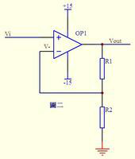
同向放大器
- 图img-amplifer3中，由虚短知： $$V- = V+ = 0$$ 由虚断及基尔霍夫定律知，通过R2与R1的电流之和等于通过R3的电
流，故 $$(V_{1} - V-)/R_{1} + (V_{2} - V-)/R_{2} = (V_{out} - V-)/R_{3}$$ 代入a式，b式变为
$$V_{1}/R_{1} + V_{2}/R_{2} = V_{out}/R_{3}$$ 如果取R1=R2=R3，则上式变为 $$V_{out}=V_{1}1+V_{2}$$ ，这就是加法器。
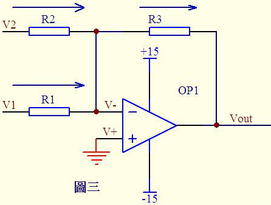
加法器
- 图img-amplifer4。因为虚断，运放同向端没有电流流过，则流过R1和R2的电流相等，同理流过R4和R3的电流也相等。故
$$(V_{1} - V+)/R_{1} = (V+ - V_{2})/R_{2}$$ $$(V_{out} - V-)/R_{3} = V-/R_{4}$$由虚短知：$$ V+ = V-$$
如果R1=R2，R3=R4，则由以上式子可以推导出$$V+ = (V_{1} + V_{2})/2$$ $$ V- = V_{out}/2$$ 故
$$V_{out} = V_{1}+V_{2}$$ 也是一个加法器.
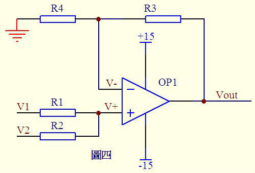
加法器2
- 图img-amplifer5由虚断知，通过R1的电流等于通过R2的电流，同理通过R4的电流等于R3的电流，故
有 $$(V_{2}-V+)/R_{1}=V+/R_{2}$$ $$(V_{1} - V-)/R_{4} = (V- - V_{out})/R_{3}$$ 如果R1=R2， 则
$$V+ = V_{2}/2$$ 如果R3=R4， 则 $$V- = (V_{out} + V_{1})/2$$ 由虚短知V+ = V- 所以$$V_{out}=V_{2}-V_{1}$$
这就是减法器。
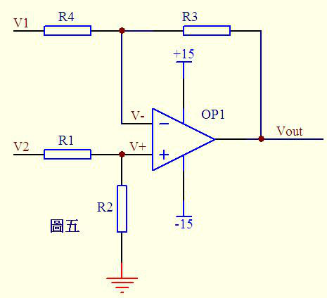
减法器
- 图img-amplifer6电路中，由虚短知，反向输入端的电压与同向端相等，由虚短知，通过R1的电流与通过C1的电流相等。通
过R1的电流 $$i=V_{1}/R_{1}$$ 通过C1的电流 $$i=C*dU_{c}/dt=-C*dV_{out}/dt$$ 所
以 $$V_{out}=((-1/(R_{1}*C_{1}))∫V_{1}dt$$ 输出电压与输入电压对时间的积分成正比,这就是积分电路。若V1为恒定电压U，
则上式变换为 $$V_{out} = -U*t/(R_{1}*C_{1}) $$ t是时间，则Vout输出电压是一条从0至负电源电压按时间变化的直线。

积分电路
- 图img-amplifer7中由虚断知，通过电容C1和电阻R2的电流是相等的，由虚短知，运放同向端与反向端电压是相等的。则：
$$V_{out} = -i * R_{2} = -(R_{2}*C_{1})dV_{1}/dt$$ 这是一个微分电路。如果V1是一个突然加入的直流电压，则输出
Vout对应一个方向与V1相反的脉

微分电路
- 图img-amplifer1运放的同向端接地=0V，反向端和同向端虚短，所以也是0V，反向输入端输入电阻很高，虚断，几乎没有电
流注入和流出，那么R1和R2相当于是串联的，流过一个串联电路中的每一只组件的电流是相同的，即流过R1的电流和流过R2的电流
是相同的。流过R1的电流 $$I_{1} = (Vi - V-)/R_{1}$$ 流过R2的电流 $$I_{2} = (V-V_{out})/R_{2}$$
$$V- = V+ =0$$ $$I_{1} = I_{2}$$ 求解上面的初中代数方程得$$V_{out} = (-R_{2}/R_{1})*V_{i}$$ 这就是传说中的反向放大
器的输入输出关系式了。
电源地和信号地
- 电源地主要是针对电源回路电流所走的路径而言的，一般来说电源地流过的电流较大，而信号地主要是针对两块芯片或者模块之间的 通信信号的回流所流过的路径，一般来说信号地流过的电流很小，其实两者都是GND，之所以分开来说，是想让大家明白在布PCB板时 要清楚地了解电源及信号回流各自所流过的路径，然后在布板时考虑如何避免电源及信号共用回流路径，如果共用的话，有可能会导 致电源地上大的电流会在信号地上产生一个电压差（可以解释为：导线是有阻抗的，只是很小的阻值，但如果所流过的电流较大时， 也会在此导线上产生电位差，这也叫共阻抗干扰），使信号地的真实电位高于0V，如果信号地的电位较大时，有可能会使信号本来是 高电平的，但却误判为低电平。当然电源地本来就很不干净，这样做也避免由于干扰使信号误判。所以将两者地在布线时稍微注意一 下，就可以。一般来说即使在一起也不会产生大的问题，因为数字电路的门限较高。
- 电源：电源使用了两个，继电器、电磁阀、电机使用24V电源，而单片机使用了12V->5V的电源。两种电源的独立布线有利于单片机工 作稳定。单片机的电源使用了uF级及104陶瓷电容进行高低频滤波，同时每块数字电路的VCC/GND脚都接有104退耦电容，增强稳定性。
- 接地：这块板子上有电源地（大电流）及信号地（弱电流）两种，为了减少串扰，两种地各自独立布线，而最后汇集在电源上才单点 接地。同时，对于所有的信号地进行了大面积接地敷铜，提高抗干扰能力。信号地的敷铜采用接地节点直接连接而不是莲花连接，最 大限度减少接地电阻。晶振也预留了接地焊盘，焊接时把晶振的金属外壳接地，能大量减少EMI。
- 保护地跟信号地的连接：保护地跟信号地没有采用直接连接，而是之间焊接了一个耐1000V的104陶瓷电容，这能最大限度地减少电磁 干扰并提高抗静电能力
几种地线
- 数字地：也叫逻辑地，是各种开关量（数字量）信号的零电位。
- 模拟地：是各种模拟量信号的零电位。
- 信号地：通常为传感器的地。
- 交流地：交流供电电源的地线，这种地通常是产生噪声的地。
- 直流地：直流供电电源的地。
- 屏蔽地：也叫机壳地，为防止静电感应和磁场感应而设。
以上这些地线处理是系统设计、安装、调试中的一个重要问题。下面就接地问题提出一些看法：
- 控制系统宜采用一点接地。一般情况下,高频电路应就近多点接地，低频电路应一点接地。在低频电路中，布线和元件间的电感并不是 什么大问题，然而接地形成的环路的干扰影响很大，因此，常以一点作为接地点；但一点接地不适用于高频，因为高频时，地线上具 有电感因而增加了地线阻抗，同时各地线之间又产生电感耦合。一般来说，频率在1MHz以下,可用一点接地；高于10MHz时，采用多点 接地；在1～10MHz之间可用一点接地，也可用多点接地。
- 交流地与信号地不能共用。由于在一段电源地线的两点间会有数mV甚至几V电压，对低电平信号电路来说，这是一个非常重要的干扰， 因此必须加以隔离和防止。
- 浮地与接地的比较。全机浮空即系统各个部分与大地浮置起来，这种方法简单，但整个系统与大地绝缘电阻不能小于50MΩ。这种方法 具有一定的抗干扰能力，但一旦绝缘下降就会带来干扰。还有一种方法，就是将机壳接地，其余部分浮空。这种方法抗干扰能力强， 安全可靠，但实现起来比较复杂。
- 模拟地。模拟地的接法十分重要。为了提高抗共模干扰能力，对于模拟信号可采用屏蔽浮技术。对于具体模拟量信号的接地处理要严 格按照操作手册上的要求设计。
- 屏蔽地。在控制系统中为了减少信号中电容耦合噪声、准确检测和控制，对信号采用屏蔽措施是十分必要的。根据屏蔽目的不同，屏 蔽地的接法也不一样。电场屏蔽解决分布电容问题，一般接大地；电磁场屏蔽主要避免雷达、电台等高频电磁场辐射干扰。利用低阻 金属材料高导流而制成，可接大地。磁场屏蔽用以防磁铁、电机、变压器、线圈等磁感应，其屏蔽方法是用高导磁材料使磁路闭合， 一般接大地为好。当信号电路是一点接地时，低频电缆的屏蔽层也应一点接地。如果电缆的屏蔽层地点有一个以上时，将产生噪声电 流，形成噪声干扰源。当一个电路有一个不接地的信号源与系统中接地的放大器相连时，输入端的屏蔽应接至放大器的公共端；相反， 当接地的信号源与系统中不接地的放大器相连时，放大器的输入端也应接到信号源的公共端。
对于电气系统的接地，要按接地的要求和目的分类，不能将不同类接地简单地、任意地连接在一起，而是要分成若干独立的接地子系统，每个子系统都有其共同的接地点或接地干线，最后才连接在一起，实行总接地
阻抗
阻抗一般分为输入阻抗和输出阻抗。 输入阻抗是对负载而言，输出阻抗主要是对电源端而言，电压，电流的内阻即相当于输出阻抗。负载相对于输入阻抗。对于电压源，输入 阻抗越大越好（例如一个实际电源由电源加内阻组成，当负载过小（输入阻抗太小），显然该负载获的得电压会小于电源电压，产生偏 差）。对电流源，输入阻抗越小越好（一个恒流源由电流源加内阻组成，当负载远小于内阻时候，才能保证恒定电流不变）。当示波器接 入光探头，探头的输入阻抗要更改成50欧姆的原因
射频
射频功率基本概念
- dB dB 在缺省情况下总是定义功率单位，以 10log 为计, 是一个纯计数单位：dB = 10logX。dB的意义其实再简单不过了，就是把一个很大（后面跟一长串0的）或者很小（前面有一长串0 的）的数比较简短地表示出来。如：X=1000000000000000= 10logX=150dB; X=0.000000000000001=10logX=-150 dB
- dBm 定义的是miliwatt, 0dBm = 10log1 mw, 功率单位与P（瓦特）换算公式：\(dBm=30+10lgP\) (P:瓦 ), 在dB，dBm计算中，要注意基 本概念。比如前面说的 0dBw = 10log1W = 10log1000mw = 30dBm；又比如，用一个dBm 减另外一个dBm时，得到的结果是dB。如： 30dBm - 0dBm = 30dB。一般来讲，在工程中，dB和dB之间只有加减，没有乘除。而用得最多的是减法：dBm 减 dBm 实际上是两个功率 相除，信号功率和噪声功率相除就是信噪比（SNR）。dBm 加 dBm 实际上是两个功率相乘，
- dBw 定义watt。0dBw=10log1 W = 10log1000 mw = 30 dBm。
- dBi和dBd dBi和dBd是考征增益的值（功率增益），两者都是一个相对值，但参考基准不一样。dBi的参考基准为全方向性天线，dBd的参考基准为 偶极子，所以两者略有不同。一般认为，表示同一个增益，用dBi表示出来比用dBd表示出来要大2. 15.
- dBc 它也是一个表示功率相对值的单位，与dB的计算方法完全一样。一般来说，dBc 是相对于载波（Carrier）功率而言，在许多情况下， 用来度量与载波功率的相对值，如用来度量干扰（同频干扰、互调干扰、交调干扰、带外干扰等）以及耦合、杂散等的相对量值。在采 用dBc的地方，原则上也可以使用dB替代
对于无线工程师来说更常用分贝dBm这个单位，dBm单位表示相对于1毫瓦的分贝数，dBm和W之间的关系是：dBm=10*lg(mW)1w的功率，换算 成dBm就是10×lg1000＝30dBm。2w是33dBm，4W是36dBm，瓦数增加一倍，dBm就增加3。用dBm做单位原因大致有几个：
- 对于无线信号的衰减来说，不是线性的，而是成对数关系衰减的。用分贝更能体现这种关系。
- 用分贝做单位比用瓦做单位更容易描述，往往在发射机出来的功率几十上百瓦，到了接收端已经是以微微瓦来计算了。
- 计算方便，衰减的计算公式用分贝来计算只用做加减法就可以了。
以1mW 为基准的dB算法，即0dBm=1mW，dBm=10*log(Power/1mW)。发射功率dBm－路径损失dB＝接收信号强度dBm, 最小通信功率dBm－路径 损失dB≥接收灵敏度下限dBm,最小通信功率dBm≥路径损失dB＋接收灵敏度下限dBm,功率与dbm的对照见表tbl-power-dbm-compare
| dBm | Watts |
|---|---|
| 0 | 1.0 mW |
| 1 | 1.3 mW |
| 2 | 1.6 mW |
| 3 | 2.0 mW |
| 4 | 2.5 mW |
| 5 | 3.2 mW |
| 6 | 4.0 mW |
| 7 | 5.0 mW |
| 8 | 6.0 mW |
| 9 | 8.0 mW |
| 10 | 10 mW |
| 11 | 13 mW |
| 12 | 16 mW |
| 13 | 20 mW |
| 14 | 25 mW |
| 15 | 32 mW |
| 16 | 40 mW |
| 17 | 50 mW |
| 18 | 64 mW |
| 19 | 80 mW |
| 20 | 100 mW |
| 21 | 128 mW |
| 22 | 160 mW |
| 23 | 200 mW |
| 24 | 250 mW |
| 25 | 320 mW |
| 26 | 400mW |
| 27 | 500mW |
| 28 | 640mW |
| 29 | 800mW |
| 30 | 1.0W |
| 31 | 1.3W |
| 32 | 1.6W |
| 33 | 2.0W |
| 34 | 2.5W |
| 35 | 3.0W |
| 36 | 4.0W |
| 37 | 5.0W |
| 38 | 6.0W |
| 39 | 8.0W |
| 40 | 10W |
| 41 | 13W |
| 42 | 16W |
| 43 | 20W |
| 44 | 25W |
| 45 | 32W |
| 46 | 40W |
| 47 | 50W |
| 48 | 64W |
| 49 | 80W |
| 50 | 100W |
| 60 | 1000W |
天线的基础知识
表征天线性能的主要参数有方向图，增益，输入阻抗，驻波比，极化方式等
- 天线的输入阻抗
天线的输入阻抗是天线馈电端输入电压与输入电流的比值。天线与馈线的连接，最佳情形是天线输入阻抗是纯电阻且等于馈线的特性阻
抗，这时馈线终端没有功率反 射，馈线上没有驻波，天线的输入阻抗随频率的变化比较平缓。天线的匹配工作就是消除天线输入阻抗
中的电抗分量，使电阻分量尽可能地接近馈线的特性阻抗。匹 配的优劣一般用四个参数来衡量即反射系数，行波系数，驻波比和回波
损耗，四个参数之间有固定的数值关系，使用那一个纯出于习惯。在我们日常维护中，用的较 多的是驻波比和回波损耗。一般移动通
信天线的输入阻抗为50Ω。
- 驻波比：它是行波系数的倒数，其值在1到无穷大之间。驻波比为1，表示完 全匹配；驻波比为无穷大表示全反射，完全失配。在移 动通信系统中，一般要求驻波比小于1.5，但实际应用中VSWR应小于1.2。过大的驻波比会减小基站 的覆盖并造成系统内干扰加大， 影响基站的服务性能。
- 回波损耗：它是反射系数绝对值的倒数，以分贝值表示。回波损耗的值在0dB的到无穷大之间，回波损耗越大表示匹配越差，回波损 耗越大表示匹配越好。0表示全反射，无穷大表示完全匹配。在移动通信系统中，一般要求回波损耗大于14dB。
- 天线的极化方式 所谓天线的极化，就是指天线辐射时形成的电场强度方向。当电场强度方向垂直于地面时，此电波就称为垂直极化波；当电场强度方向 平行于地面时，此电波就称为水 平极化波。由于电波的特性，决定了水平极化传播的信号在贴近地面时会在大地表面产生极化电流， 极化电流因受大地阻抗影响产生热能而使电场信号迅速衰减，而 垂直极化方式则不易产生极化电流，从而避免了能量的大幅衰减，保 证了信号的有效传播。因此，在移动通信系统中，一般均采用垂直极化的传播 方式。另外，随着新技术的发展，最近又出现了一种双 极化天线。就其设计思路而言，一般分为垂直与水平极化和±45°极化两种方式，性能上一般后者优于前 者，因此目前大部分采用的 是±45°极化方式。双极化天线组合了+45°和-45°两副极化方向相互正交的天线，并同时工作在收发双工模式下，大大节省了 每个 小区的天线数量；同时由于±45°为正交极化，有效保证了分集接收的良好效果。
- 天线的增益 天线增益是用来衡量天线朝一个特定方向收发信号的能力，它是选择基站天线最重要的参数之一。一般来说，增益的提高主要依*减小 垂直面向辐射的波瓣宽度，而在水平面上保持全向的辐射性能。天线增益对移动通信系统的运行质量极为重要，因为它决定蜂窝边 缘 的信号电平。增加增益就可以在一确定方向上增大网络的覆盖范围，或者在确定范围内增大增益余量。任何蜂窝系统都是一个双向过程， 增加天线的增益能同时减 少双向系统增益预算余量。另外，表征天线增益的参数有dBd和dBi。DBi是相对于点源天线的增益，在各方向 的辐射是均匀的；dBd相对于对称阵子天线 的增益dBi=dBd+2.15。相同的条件下，增益越高，电波传播的距离越远。一般地，GSM定向 基站的天线增益为18dBi，全向的为11dBi。
- 天线的波瓣宽度 波瓣宽度是定向天线常用的一个很重要的参数，它是指天线的辐射图中低于峰值3dB处所成夹角的宽度（天线的辐射图是度量天线各个 方向收发信号能力的一个指标，通常以图形方式表示为功率强度与夹角的关系）。天线垂直的波瓣宽度一般与该天线所对应方向上的覆 盖半径有关。因此，在一定范围内通过对天线垂直度（俯仰角）的调节，可以达到改善小区覆盖质量的目的，这也 是我们在网络优化 中经常采用的一种手段。主要涉及两个方面水平波瓣宽度和垂直平面波瓣宽度。水平平面的半功率角（H－Plane Half Power beamwidth）45°, 60°,90°等)定义了天线水平平面的波束宽度。角度越大,在扇区交界处的覆盖越好，但当提高天线倾角时，也越容 易发生波束畸变,形成越区覆盖。角度越 小，在扇区交界处覆盖越差。提高天线倾角可以在移动程度上改善扇区交界处的覆盖，而且相 对而言，不容易产生对其他小区的越区覆盖。在市中心基站由于站距 小，天线倾角大，应当采用水平平面的半功率角小的天线，郊区 选用水平平面的半功率角大的天线；垂直平面的半功率角（V－Plane Half Power beamwidth）:（48°, 33°,15°,8°）定义了天线 垂直平面的波束宽度。垂直平面的半功率角越小，偏离主波束方向时信号衰减越快，在越容易通过调整天线倾角准确控制覆盖范 围。
- 前后比(Front-Back Ratio) 表明了天线对后瓣抑制的好坏。选用前后比低的天线，天线的后瓣有可能产生越区覆盖，导致切换关系混乱，产生掉话。一般在25－ 30dB之间，应优先选用前后比为30的天线.
晶振与射频
晶振，作为一个系统时钟的提供者，在每个系统中必不可少，只是在一般的单片机系统中，由于对通信速率的要求不高，对晶体的要求比 较低，一般的晶体就能很好满足系统的需要；但是在无线系统中，特别是在高频无线系统中，对于晶体的要求就比 较高。先介绍一个单 位：PPM，是一个缩写，意思是百万分之一，是一个计算晶体或者振荡器频率偏差的计数方法。1ppm偏差对于13MHz来说就是13Hz，10ppm 偏差就是130Hz。标准误差ppm，是晶体实际的频率与标称频率间的误差比值。这个误差一般用±ppm来表示，是指明在25℃下，在指定的 负载电容情况下得值与标称的误差比值，典型的标称误差为±10~50ppm。温度漂移ppm，就是大家常说的频率的温度稳定性。频率的稳定 性是在规定的温度范围内其频率相对于25℃时的频率改变比值。典型的温度漂移范围位±10~30ppm。不过有时温度漂移可以抵消标称误差 的。老化稳定性，是晶体经过一段时间后其频率的变化比值。一个典型的变化是每年有2ppm的变化。
器件
磁珠
EMC分为EMI和EMS，可以理解为EMI是自己对别人的干扰，EMS是别人对自己的干扰。那么磁珠的作用是就有EMI的作用，也有EMS的作用， 就是减小本电路的干扰信号的能量，也同时减小其他电路对自己的干扰信号的能量。其实磁珠是电感的一种特殊形式，电感是在比较大的 范围内对信号的一种阻碍，但磁珠的感抗曲线比较陡峭，就是在某一特定频率（如题中的100MHz，下阻抗是1K欧）会对信号有明显的阻碍 和衰减作用。因此磁珠会将高频能量吸收和消耗掉大部分。
电容
- 关于滤波电容、去耦电容、旁路电容作用见图img-capacity-compare, 在电子电路中，去耦电容和旁路电容都是起到抗干扰的作
用，电容所处的位置不同，称呼就不一样了。对于同一个电路来说，旁路（bypass）电容是把输入信号中的高频噪声作为滤除对象，把
前级携带的高频杂波滤除，而去耦（decoupling）电容也称退耦电容，是把输出信号的干扰作为滤除对象。

电容的不同用法
- 滤波电容: 用在电源整流电路中，用来滤除交流成分。使输出的直流更平滑。
- 去耦电容: 用在放大电路中不需要交流的地方，用来消除自激，使放大器稳定工作。
- 去耦电容主要是去除高频如RF信号的干扰，干扰的进入方式是通过电磁辐射。而实际上，芯片附近的电容还有蓄能的作用，这是 第二位的。 你可以把总电源看作密云水库，我们大楼内的家家户户都需要供水，这时候，水不是直接来自于水库，那样距离太远 了，等水过来，我们已经渴的不行了。实际水是来自于大楼顶上的水塔,水塔其实是一个buffer的作用。如果微观来看，高频器件 在工作的时候，其电流是不连续的，而且频率很高，而器件VCC到总电源有一段距离，即便距离不长，在频率很高的情况下，阻抗 Z＝i*wL+R，线路的电感影响也会非常大，会导致器件在需要电流的时候，不能被及时供给。而去耦电容可以弥补此不足。这也是 为什么很多电路板在高频器件VCC管脚处放置小电容的原因之一.在vcc引脚上通常并联一个去藕电容，这样交流分量就从这个电容 接地。
- 有源器件在开关时产生的高频开关噪声将沿着电源线传播。去耦电容的主要功能就是提供一 个局部的直流电源给有源器件，以减 少开关噪声在板上的传播和将噪声引导到地 ;
- 旁路电容: 用在有电阻连接时，接在电阻两端使交流信号顺利通过。从元件或电缆中转移出不想要的共模RF能量。这主要是通过产生 AC旁路消除无意的能量进入敏感的部分，另外还可以提供基带滤波功能（带宽受限）。我们经常可以看到，在电源和地之间连接着去 耦电容，它有三个方面的作用：一是作为本集成电路的蓄能电容；二是滤除该器件产生的高频噪声，切断其通过供电回路进行传播的 通路；三是防止电源携带的噪声对电路构成干扰。
电阻
- 贴片电阻的标称阻值问题：贴片电阻又叫"矩形片状电阻，是由ROHM公司发明并最早推出市场的。特点是耐潮湿高温，外观尺寸均匀，
精确且温度系数与阻值公差小。
- 标称阻值：贴片电阻阻值用英文符号R表示，1000R等于1K，厂家一般标志105R。贴片电阻常用的误差有5%与1%系列，1%的我们又叫 做精密贴片电阻或者贴片精密电阻。标称在电阻器上的电阻值称为标称值。单位：Ω、kΩ、MΩ。标称值是根据国家制定的标准系 列标注的，不是生产者任意标定的。不是所有阻值的电阻器都存在。
- 温度系数：±ppm/℃，即单位温度引起的电阻值的变化。ppm(Part Per Million)表示百万分之几，比如：标称阻值为1k的电阻，温 度系数为±100ppm/℃，意为温度变化一摄氏度，电阻值的变化为1k±0.1Ω，变化100℃，阻值变化为1k±10Ω，精度非常高了。电 阻的温度系数精密级的在几十ppm，普通的是200～250ppm，最差的也不过500ppm。
- 额定功率：指在规定的环境温度下，假设周围空气不流通，在长期连续工作而不损坏或基本不改变电阻器性能的情况下，电阻器上 允许的消耗功率。常见的有1/16W 、1/8W 、1/4W 、1/2W 、1W 、2W 、5W 、10W 。
- 允许误差：电阻器的实际阻值对于标称值的最大允许偏差范围称为允许误差。误差代码：F 、G 、J、 K…(常见的误差范围是： 0.01%，0.05%，0.1%，0.5%，0.25%，1%，2%,5% 等)。
- 贴片电阻器的材料和性能
- 碳膜系列：利用碳膜电阻系列材料制作的电阻器一般称为“碳膜电阻器”，它主要是把有机材料热分解得到的薄膜电阻器。覆盖1Q 一lOMQ的电阻值范围，价格便宜、制造容易，作为通用电阻器而畅销(流通量最多)。相反，由于温度系数和噪声方面存在问题，不 适用于高精度及信号的电路。
- 厚膜电阻器：厚膜电阻器是把金属类电阻材料与有机填料混合起来印刷后烧成，还可以在其上印刷保护层，使用范围广。现在成为 主流的通用片状电阻器和电阻排也使用这种类型的电阻体。尽管是通用的电阻器，也只是覆盖ioO一lOMQ电阻值范围，温度系数也是 在土300一50ppm/℃。还有，噪声也比碳膜电阻低，流通量仅次于碳膜电阻器，价格便宜、容易买到。厚膜电阻器在材料上下功夫， 制作出了特殊规格的低阻型、高阻型的电阻器，阻值覆盖范围在O.lQ-lOOM,Q以上，在电阻器中覆盖了最大的电阻值范围。
- 薄膜电阻器：薄膜电阻器主要是进行真空蒸发，以形成电阻体，与厚膜制作;法和特性不同。制造设备规模大，电阻材料自由度大， 能够得到好性能的电阻器。电阻值的范围大约为100一1MQ，温度系数为土100-5ppm/℃。由于电阻的连续性好、噪声小，适用于高精 度/小信号的电路。价格和易购性比以前大有改进。 一般情况下，薄膜电阻器的电阻值也可以做到O.lO一100MQ,温度系致寺万面虽 然不太好，但作为商精度的1战阻电阻器还是很重要的。
- 金属氧化膜电阻器：金属氧化膜电阻器是把锡等金属的化合物加热氧化后得到的，俗称“金属氧化物”。金属丝以及金属带：电阻 器采用锰(镍)铜和镍铬等合金丝和带状线，主要作为绕线型使用。材料的自由度大，温度系数为±200-5ppm/℃。因为机械方面的限 制，不能使用过细电阻丝，电阻值的范围偏于O.lQ一数十kO。与其他电阻器相比，由于金属丝和金属带的截面积大，故具有耐瞬时 大电流的优点。
- 电阻的额定功率: 这个功率一般是指在常温环境下，保证电阻正常工作时所允许的最大耗散功率。一般对应一个电阻体的温度提升范围。 例如，在正常安装条件下，当该电阻功耗达到1/4W时，电阻体会形成50度的温升，即电阻体温度达到75度。实际使用中，如果环境温度 偏高，该功率容量应该降额使用。例如，如果该电阻旁边有个器件会达到50度，此时就只能按1/8W来用了。同样，如果安装条件改善， 例如增加散热片，或强制通风，这个功率适当放大也是许可的，但一般不会这样做。这个功率一般会留有一定的余量，除非功耗超出很 多，或者环境恶劣，等额使用直接烧坏电阻一般不至于。
内核
51单片机
- MCS-51中断函数注意如下
- 中断函数不能进行参数传递，如果中断函数中包含任何参数声明都将导致编译出错。
- 断函数没有返回值，如果企图定义一个返回值将得不到正确的结果，建议在定义中断函数时将其定义为void类型，以明确说明没有 返回值。
- 在任何情况下都不能直接调用中断函数，否则会产生编译错误。因为中断函数的返回是由8051单片机的RETI指令完成的，RETI指令 影响8051单片机的硬件中断系统。如果在没有实际中断情况下直接调用中断函数，RETI指令的操作结果会产生一个致命的错误。
- 如果在中断函数中调用了其它函数，则被调用函数所使用的寄存器必须与中断函数相同。否则会产生不正确的结果。
- C51编译器对中断函数编译时会自动在程序开始和结束处加上相应的内容，具体如下：在程序开始处对ACC、B、DPH、DPL和PSW入栈， 结束时出栈。中断函数未加using n修饰符的，开始时还要将R0~R1入栈，结束时出栈。如中断函数加using n修饰符，则在开始将 PSW入栈后还要修改PSW中的工作寄存器组选择位。
- C51编译器从绝对地址8m+3处产生一个中断向量，其中m为中断号，也即interrupt后面的数字。该向量包含一个到中断函数入口地址 的绝对跳转。
- 中断函数最好写在文件的尾部，并且禁止使用extern存储类型说明。防止其它程序调用。
软件
语言
C语言
宏定义特殊用法
- 从注释来看是把x转换成字符串。
/* * Macros to transform values * into environment strings. */ #define XMK_STR(x) #x #define MK_STR(x) XMK_STR(x)
找到了相关的资料，解读了这个define，还顺便认识了另外两个不常用的define
#define Conn(x,y) x##y #define ToChar(x) #@x #define ToString(x) #x
x##y表示什么？表示x连接y，举例说：
int n = Conn(123,456); //结果就是n=123456;
char* str = Conn("asdf", "adf")//结果就是 str = "asdfadf";
再来看#@x，其实就是给x加上单引号，结果返回是一个const char。举例说：char a = ToChar(1);结果就是a='1';做个越界试验char a = ToChar(123);结果是a='3'; 但是如果你的参数超过四个字符，编译器就给给你报错了！error C2015: too many characters in constant; 最后看看#x,估计你也明白了，他是给x加双引号
char* str = ToString(123132);//就成了str="123132";
- 宏调试接口
#ifdef DEBUG #define DbgPrintf printf #else #define DbgPrintf /\ /DbgPrintf #endif
位操作
- 将最右侧0改为1：
x|(x+1)
- 计算绝对值
int abs( int x ) { int y ; y = x >> 31 ; return (x^y)-y ;//or: (x+y)^y } - 符号函数
int sign(int x) { return (x>>31) | (unsigned(-x))>>31 ;//x=-2^31时失败(^为幂) }- sign(x) = -1, 则x<0;
- sign(x) = 0, 则x==0 ;
- sign(x) = 1, 则x>0
- 三值比较
int cmp( int x, int y ) { return (x>y)-(x-y) ; }- cmp(x,y) = -1, 则x<y;
- cmp(x,y) = 0, 则x==y;
- cmp(x,y) = 1, 则x > y；
- 不使用第三方交换x,y
x ^= y ; y ^= x ; x ^= y ; x = x+y ; y = x-y ; x = x-y ; x = x-y ; y = y+x ; x = y-x ; x = y-x ; x = y-x ; x = x+y ;
- 统计1位的数量
int pop(unsigned x) { x = x-((x>>1)&0x55555555) ; x = (x&0x33333333) + ((x>>2) & 0x33333333 ) ; x = (x+(x>>4)) & 0x0f0f0f0f ; x = x + (x>>8) ; x = x + (x>>16) ; return x & 0x0000003f ; } - 位反转
unsigned rev(unsigned x) { x = (x & 0x55555555) << 1 | (x>>1) & 0x55555555 ; x = (x & 0x33333333) << 2 | (x>>2) & 0x33333333 ; x = (x & 0x0f0f0f0f) << 4 | (x>>4) & 0x0f0f0f0f ; x = (x<<24) | ((x&0xff00)<<8) | ((x>>8) & 0xff00) | (x>>24) ; return x ; } - 二进制码到GRAY码的转换
unsigned B2G(unsigned B ) { return B ^ (B>>1) ; } - GRAY码到二进制码
unsigned G2B(unsigned G) { unsigned B ; B = G ^ (G>>1) ; B = G ^ (G>>2) ; B = G ^ (G>>4) ; B = G ^ (G>>8) ; B = G ^ (G>>16) ; return B ; }
JAVA语言
PYTHON语言
系统
android
base
- 上下文context
- getApplicationContext():生命周期是整个应用，应用摧毁，它才摧毁。
- this:代表当前,在Activity当中就是代表当前的Activity，换句话说就是Activity.this在Activity当中可以缩写为this.
- getApplication():andorid 开发中共享全局数据;
我们在平时的开发中，有时候可能会需要一些全局数据，来让应用中得所有Activity和View都能访问到，大家在遇到这种情况时，可能 首先会想到自己定义一个类，然后创建很多静态成员，不过andorid已经为我们提供了这种情况的解决方案：在Android中，有一个名为 Application的类，我们可以在Activity中使用getApplication()，方法来获得，它是代表我们的应用程序的类，使用它可以获得当前 应用的主题，资源文件中的内容等，这个类更灵活的一个特性就是可以被我们继承，来添加我们自己的全局属性。
- 判断当前Activity
ActivityManager am = (ActivityManager) getSystemService(ACTIVITY_SERVICE); ComponentName cn = am.getRunningTasks(1).get(0).topActivity; Log.d(TAG, "pkg:"+cn.getPackageName());//显示当前activity所在路径 Log.d(TAG, "cls:"+cn.getClassName());//路径+类名 Log.d(TAG, MyActivity.class.getName()); //路径+类名 Log.d(TAG, MyActivity.class.getSimpleName()); //类名
Bundle
android中的Bundle一般用于携带数据，类似于Map，用于存放key-value键值对，其提供了各种putXx()和getXx()方法，putXx()用于往 Bundle对象中放入数据，getXx()用于从Bundle对象中获取数据。比如Bundle常用与组件之间进行数据传输，我们可以将Bundle设置好数 据后，利用Intent的putExtras()方法将Bundle捆绑到Intent中，然后再传递给别的组件；
Intent
Intent可以用于启动别的组件比如Activity和Service等，并在Intent中绑定一定的数据，传递给目标组件。
系统时间
- 获取年月日
import java.text.SimpleDateFormat; SimpleDateFormat formatter = new SimpleDateFormat("yyyy年MM月dd日HH:mm:ss"); Date curDate = new Date(System.currentTimeMillis());//获取当前时间 String str = formatter.format(curDate); - 获取当前的年月时分
SimpleDateFormat sDateFormat = new SimpleDateFormat("yyyy-MM-dd hh:mm:ss"); String date = sDateFormat.format(new java.util.Date()); - 获取当前的年月
SimpleDateFormat sdf=new SimpleDateFormat("yyyy-MM"); String date=sdf.format(new java.util.Date()); - 获取指定时区的时间
df = DateFormat.getDateTimeInstance(DateFormat.FULL,DateFormat.FULL,Locale.CHINA); System.out.println(df.format(new Date()));
- 确定系统时间制式
ContentResolver cv = this.getContentResolver(); String strTimeFormat = android.provider.Settings.System.getString(cv, android.provider.Settings.System.TIME_12_24); if(strTimeFormat.equals("24")){ Log.i("activity","24"); } - 取得系统时间日期
Calendar c = Calendar.getInstance(); year = c.get(Calendar.YEAR) /*取得系统日期*/ month = c.grt(Calendar.MONTH) day = c.get(Calendar.DAY_OF_MONTH) hour = c.get(Calendar.HOUR_OF_DAY);/*取得系统时间*/ minute = c.get(Calendar.MINUTE)
- 利用TIMER获取
Time t=new Time(); // or Time t=new Time("GMT+8"); 加上Time Zone资料。 t.setToNow(); // 取得系统时间。 int year = t.year; int month = t.month; int date = t.monthDay; int hour = t.hour; // 0-23 int minute = t.minute; int second = t.second;
activity
Fragment
Android运行在各种各样的设备中，有小屏幕的手机，超大屏的平板甚至电视。针对屏幕尺寸的差距，很多情况下，都是先针对手机开发 一套App，然后拷贝一份，修改布局以适应平板神马超级大屏的。难道无法做到一个App可以同时适应手机和平板么，当然了，必须有啊。 Fragment的出现就是为了解决这样的问题。你可以把Fragment当成Activity的一个界面的一个组成部分，甚至Activity的界面可以完全有 不同的Fragment组成，更帅气的是Fragment拥有自己的生命周期和接收、处理用户的事件，这样就不必在Activity写一堆控件的事件处理 的代码了。更为重要的是，你可以动态的添加、替换和移除某个Fragment; Fragment必须是依存与Activity而存在的，因此Activity的生 命周期会直接影响到Fragment的生命周期, Fragment的生命周期见图img-fragment-cycle;

Fragment生命周期
button
- button透明：xml中使用android:background="@android:color/transparent"
下拉菜单
实现某个菜单框里面有多个选项，点击后可以展示各个字符菜单项，点击后可以产生点击事件，可以将某个int值和字符菜单项对应；实 现方法：
- 定义两个array资源：
//字符菜单项 <string-array name="gps_type_options"> <item>GPS</item> <item>GPS and GLONASS</item> <item>GPS and BEIDOU</item> </string-array>//int对应值 <integer-array name="gps_type_values"> <item>0</item> <item>1</item> <item>2</item> </integer-array> - xml中定义器件
<Spinner android:id="@+id/spinnerType" android:layout_width="0dip" android:layout_height="wrap_content" android:layout_marginRight="8dip" android:layout_weight="1" /> - 在源文件中获取这2个资源：
String[] gpsTypeOptions = getResources().getStringArray(R.array.gps_type_options); int[] gpsTypeValues = getResources().getIntArray(R.array.gps_type_values);
- 绑定两者成adapter:
private IntArrayAdapter mGPSTypeAdapter; mGPSTypeAdapter = new IntArrayAdapter(this, gpsTypeOptions, gpsTypeValues);
- 将adapter装配到view上：
private Spinner mSpinnerType; mSpinnerType = (Spinner) findViewById(R.id.spinnerType); mSpinnerType.setAdapter(mGPSTypeAdapter); mSpinnerType.setOnItemSelectedListener(onItemSelectedListener);
- 实现点击事件：
private OnItemSelectedListener onItemSelectedListener = new OnItemSelectedListener() { @Override public void onItemSelected(AdapterView<?> adapter,View view,int position,long id) { if (adapter == mSpinnerType) { mGPSTypePostion = position; } } @Override public void onNothingSelected(AdapterView<?> arg0) {} };
复选框
正方形的复选框选项
- xml中定义器件
<CheckBox android:id="@+id/cb" android:layout_width="wrap_content" android:layout_height="wrap_content" android:checked="false" android:text="已婚" />
- 源码中获取器件
private CheckBox mCheckKeep; mCheckKeep = (CheckBox) findViewById(R.id.checkKeep);
- 监听事件
//绑定监听器 cb.setOnCheckedChangeListener(new OnCheckedChangeListener() { @Override public void onCheckedChanged(CompoundButton arg0, boolean arg1) { Toast.makeText(MyActivity.this, arg1?"选中了":"取消了选中" , Toast.LENGTH_LONG).show(); } }); - 也可以查询获得结果
if(!cb.isChecked()){ }
service
- 在service中启动activity：
Intent intent = new Intent(getBaseContext(), MtkPlatformTest.class); intent.addFlags(Intent.FLAG_ACTIVITY_NEW_TASK);必须加这句 startActivity(intent);
Bound Service
要做绑定服务操作，client需要调用bindService() , 调用后，系统将调用server的onBind()方法，这个方法将返回一个IBinder，这个 IBinder正是反给client，client使用此IBinder来调用server实现的各种服务接口，client要取得这个IBinder，需要实现一个接口 ServiceConnection 作为bindService的参数，此ServiceConnection中的方法onServiceConnected将被系统回调(在onBind执行完后)，而 onBind返回的IBinder正是作为参数传给onServiceConnected，这样client就可以在onServiceConnected里面获得该IBinder；
broadcast
广播机制可以事务处理异步化，可以将事务的处理放在别的地方，然后在另一个地方发送一个Intent，系统会根据此Intent来找到相应的 广播处理方法来处理，步骤如下。
- 设定IntentFilter，可以在manifest文件中设置，也可以在源码中动态设置，实例如下;
private static IntentFilter makeIntentFilter() { final IntentFilter intentFilter = new IntentFilter(); intentFilter.addAction(ACTION_GATT_CONNECTED); intentFilter.addAction(ACTION_GATT_DISCONNECTED); intentFilter.addAction(ACTION_GATT_SERVICES_DISCOVERED); intentFilter.addAction(ACTION_DATA_AVAILABLE); return intentFilter; } - 设置广播事务处理，实例如下;
private final BroadcastReceiver mReceiver = new BroadcastReceiver() { @Override public void onReceive(Context context, Intent intent) { final String action = intent.getAction(); if (ACTION_GATT_CONNECTED.equals(action)) { //... } else if (ACTION_GATT_DISCONNECTED.equals(action)) { //... } else if (ACTION_GATT_SERVICES_DISCOVERED.equals(action)) { //... } else if (ACTION_DATA_AVAILABLE.equals(action)) { //... } } }; - 注册，将action和事务处理相结合，实例如下;
registerReceiver(mReceiver, makeIntentFilter());
- 产生事件源，在别的地方发送消息，实例如下;
private void broadcastUpdate(final String action) { final Intent intent = new Intent(action); sendBroadcast(intent); }
消息机制
Android应用程序是通过消息来驱动的，系统为每一个应用程序维护一个消息队例，应用程序的主线程不断地从这个消息队例中获取消息 (Looper)，然后对这些消息进行处理(Handler)，这样就实现了通过消息来驱动应用程序的执行.
- Message：消息，其中包含了消息ID，消息处理对象以及处理的数据等，由MessageQueue统一列队，终由Handler处理。
- Handler：处理者，负责Message的发送及处理。使用Handler时，需要实现handleMessage(Message msg)方法来对特定的Message进行处理，例如更新UI等。
- MessageQueue：消息队列，用来存放Handler发送过来的消息，并按照FIFO规则执行。当然，存放Message并非实际意义的保存，而是将 Message以链表的方式串联起来的，等待Looper的抽取。
- Looper：消息泵，不断地从MessageQueue中抽取Message执行。因此，一个MessageQueue需要一个Looper。
- Thread：线程，负责调度整个消息循环，即消息循环的执行场所。
Handler
功能主要是跟UI线程交互用，主要有：
- 用handler发送一个message，然后在handler的线程中来接收、处理该消息，以避免直接在UI主线程中处理事务导致影响UI主线程的其 他处理工作 ；
- 你可以将handler对象传给其他进程，以便在其他进程中通过handler给你发送事件；
- 通过handler的延时发送message，可以延时处理一些事务的处理；
- 线程处理功能：可以使用Handler的post方法，将要处理的事务放在一个thread里面，然后将该线程post到Handler的线程队列中(其实
这个线程和activity主线程是同一个线程，只是运行了线程的run方法)，则该事务将会在thread里面执行，如果使用
postDelayed(thread, time)方法，还能设置一个延时time后执行该事务，类似于timer功能；
实例如下所示。
//使用handler时首先要创建一个handler Handler handler = new Handler(); //要用handler来处理多线程可以使用runnable接口，这里先定义该接口 //线程中运行该接口的run函数 Runnable update_thread = new Runnable(){ public void run(){ //线程每次执行时输出"UpdateThread..."文字,且自动换行 //textview的append功能和Qt中的append类似，不会覆盖前面 //的内容，只是Qt中的append默认是自动换行模式 text_view.append("\nUpdateThread..."); //延时1s后又将线程加入到线程队列中 handler.postDelayed(update_thread, 1000); } }; //将线程接口立刻送到线程队列中 handler.post(update_thread); //将接口从线程队列中移除 handler.removeCallbacks(update_thread); - 异步消息处理功能：同样也是使用上面线程处理功能，将某个线程thread，post到handler的线程队列中，线程队列中处理事务，并可
以使用handler的sendMessage()，方法向handler中发送message，然后在handler中可以使用handleMessage来处理这个消息；实例如下：
//创建一个handler，内部完成处理消息方法 Handler update_progress_bar = new Handler(){ public void handleMessage(Message msg) { super.handleMessage(msg); //显示进度条 progress_bar.setProgress(msg.arg1); //重新把进程加入到进程队列中 update_progress_bar.post(update_thread); } }; update_progress_bar.post(update_thread);//post线程 Runnable update_thread = new Runnable() { int i = 0; public void run() { i += 10; //首先获得一个消息结构 Message msg = update_progress_bar.obtainMessage(); //给消息结构的arg1参数赋值 msg.arg1 = i; //延时1s Thread.sleep(1000); //把消息发送到消息队列中 update_progress_bar.sendMessage(msg); if(i == 100) update_progress_bar.removeCallbacks(update_thread);//移除 } };
Looper
Message
menu
menu标签中item标签的主要属性见表tbl-menu-bar
| 属性名 | 说明 |
|---|---|
| android:orderInCategory | 指每个item优先级，值越大越低，地方不够就会放到overflow中。 |
| android:title | item的标题。 |
| android:icon | item显示的图标。 |
| app:showAsAction | item显示的方式。 |
工具
emacs
安装
- gnuserv安装：将emacs目录拷贝后，在系统环境变量中增加HOME键值等于emacs路径(d:\emacs)，即可；
基本操作
- 在eshell中使用$PATH$可以输出当前emacs的路径path；
- 计算器模式1：M-x calc进入，输入"10"回车"d2，这个d2会把窗口中的所有数字显示为二进制形式，所有的数字都会以"2#"开头,以表 示它们是二进制形式。如果要重新用十进制显示，则输入"d0"即可，同样，也可以用"d8""，"d6"来显示八进制和十六进制的格式。如 果要进行进制转换，比如讲二进制的1010转换为十六进制，可以这样先d6设定16进制模式，然后再minibuffer中输入2#1010，回车；
- 计算器模式2：M-x quick-calc进入，启动后会在minibuffer里提示输入数学计算式，回车就显示结果；
- 查询当前模式:C-h m或者M-x describe-mode ;
- 导入图片见图img-pic-test:可以通过调节width=.1\ linewidth来限制图片输出的大小, 其中.1表示倍率，或者使用scale=0.2
进行调节

emacs导图测试
- 字体：试试 粗体 ，试试 斜体 , 试试
删除线，试试 下划线, 试试下标 H2O 试试上标 E=mc2 ，等宽字体git - el源文件编译:对于emacs某些包，有生成的elc的编译文件，emacs启动时，调用elc启动速度会更快，但是如果修改了源文件el，则可 以使用M-x：byte-recompile-directory来重新编译，才能将修改的地方起作用。比如org mode中修改latex的生成模式函数 org-export-latex-make-header
- eshell 查看系统字体:eshell:fc-list(或者fc-list.exe) (空格) :lang=zh-cn
- 设置编码格式:使用快捷键：C-x RET f 然后可以用 TAB 显示所有存在的编码。这个命令会改变文件！如果只是出现乱码，并且不想改 变文件本身，可以用命令C-x RET r ( M-x revert-buffer-with-coding-system)来用指定的编码重新读入这个文件。不改变当前文件 编码，但将该文件另存为utf-8编码格式：C-x RET c(M-x universal-coding-system-argument ) utf-8
- 右键菜单配置打开命令：在注册表\HKEY_CLASSES_ROOT\AllFilesystemObjects\shell\下面新建一项Emacs，再在下面新建command项， 看起来应该是这样：\HKEY_CLASSES_ROOT\AllFilesystemObjects\shell\Emacs\command\ 然后把command项右边的默认值设为 Path\gnuclientw.exe，并加上"%1"
- emacs配置立马生效: 可以M-x eval-current-buffer立马生效;
org-mode
- 插入公式：
- 公式：\(a^2+b^2=c^2\)
- 公式：\(a^2 + b^2 = c^2\)
- 公式：$$a^2 + b^2 = c^2$$
- 公式：\[a^2 + b^2 = c^2\]
- 公式5：\(\sqrt{2}\)
- 表格计算：
- 行表示：第2行：@2;
- 列表示：第2列：$2;
- 表格表示：第2行第2列：@2$2, 或者B2;
- 打开表格符号帮助：C-c ?;
- 显示行列帮助：C-c };
- 公式引用：在表格下方的计算公式上使用C-c C-c，或者在表格中使用C-u C-c *;
- 表格中输入计算公式：在表格中使用=表示列计算方式，使用:=表格单个表格计算公式；
- 在minibuffer中输入公式：列计算模式C-c =，表格计算模式C-u C-c = ;
- 在单独的buffer中输入公式：C-c ';
- 求平均值函数vmean:例如:=vmean($2..$3)；
- org-mode转换到pdf需要在org-mode文件中头部使用如下头;
#+title: 我的记事本 #+author: lxc #+ latex_class: org-latex-pdf #+ latex: \newpage
- 表格可以参考“table.el”模式;
- 画图测试：如果要支持中文，org文档需为utf-8的格式，这是java调用ditaa.jar时的默认格式, 效果如图img-test所示

测试画图
- 由于org文档转换为latex文本时，中间需要软件iconv将之转换为utf-8格式，而org源文档是gbk格式，所以如果将org文档由gbk格式转 换为了别的格式，比如utf-8，则需要修改iconv的转换命令，详细见org个配置文档“my-org-mode.el”
- 如果需要修改org文档中嵌入的代码宽度高度，可以修改"my-org-mode.el"中的如下代码"页边距"
\lstset{numbers=left, %设置行号位置
numberstyle=\\tiny, %设置行号大小
keywordstyle=\\color{blue}, %设置关键字颜色
commentstyle=\\color[cmyk]{1,0,1,0}, %设置注释颜色
frame=single, %设置边框格式
escapeinside=``, %逃逸字符(1左面的键)，用于显示中文
breaklines, %自动折行
extendedchars=false, %解决代码跨页时,章节标题，页眉汉字不显示
xleftmargin=10em,xrightmargin=5em, aboveskip=0.5em, %设置页边距
tabsize=4, %设置tab空格数
showspaces=false} %不显示空格
python-mode
- 进入交互python模式：进入某个buffer，M-x python-mode，然后C-c C-z即可进入交互模式，也可以在buffer里面写好程序，在C-c C-z直接运行buffer的代码；
latex
- 固定latex插入的图片位置
百科
GPS
- 地球经纬线：地轴是一根通过地球南北极和地球中心的假想线，在地球中腰画一个与地轴垂直的大圆圈，使圆圈的每个点都和南北极的 距离相等，这个圆圈就叫做“赤道”，在赤道的南北两边，画出许多和赤道平行的圆圈叫纬线，赤道定为纬度零度，向南向北各90°， 北极就是北纬90°，南极就是南纬90°；从北极点到南极点，画出许多南北方向的与地球赤道垂直的大圆圈，叫做经度，国际上规定以 通过英国伦敦近郊的格林尼治天文台的经线作为计算经度的起点，即经度零度零分零秒，也称“本初子午线”；在它东面的为东经，共 180度，在它西面的为西经，共180度；因为地球是圆的，所以东经180度和西经180度的经线是同一条经线；规定180度经线为“国 际日期变更线”。为了避免同一地区使用两个不同的日期，国际日期变线在遇陆地时略有偏离；每一经度和纬度还可以再细分为60分， 每一分再分为60秒以及秒的小数。利用经纬线，我们就可以确定地球上每一个地方的具体位置，并且把它在地图或地球仪上表示出来； 经度和纬度都是一种角度。
- 经度: 是个两面角，是两个经线平面的夹角。因所有经线都一样长，为度量经度选取一个起点面(本初子午线),本初子午线平面是起点 面，终点面是本地经线平面,某一点的经度，就是该点所在的经线平面与本初子午线平面间的夹角。
- 纬度：是个线面角。起点面是赤道平面，线是本地的地面法线。所谓法线，即垂直于参考扁球体表面的线；某地的纬度就是该地的法线 与赤道平面之间的夹角。纬度数值在0至30度之间的地区称为低纬地区，纬度数值在30至60度之间的地区称为中纬地区，纬度数值在60 至90度之间的地区称为高纬地区。
经纬度转换
- 度转度分秒 如何将度(DDD)：108.90593度换算成“度分秒(DMS)“，东经E 108度54分22.2秒?转换方法是将108.90593整数位不变取108(度),用 0.90593*60=54.3558,取整数位54(分),0.3558*60=21.348再取整数位21(秒),故转化为108度54分21秒.
- 度分秒转度 同样将度分秒(DMS):东经E 108度54分22.2秒 换算成度(DDD)的方法如下:108度54分22.2秒=108+(54/60)+(22.2/3600)=108.90616度； 因为计算时小数位保留的原因，导致正反计算存在一定误差，但误差影响不是很大。1秒的误差就是几米的样子。
经纬度转换米
- 子午线总长度大约L=40008km；
- 赤道半径 = 大约6378.140km；
- 极半径 = 大约6356.755km；
- 地球平均半径 = 大约6371.004km；
- 纬度1度 = (L/2)/180=大约111km ;
- 纬度1分 = 111km/60 = 大约1.85km ;
- 纬度1秒 = 1.85km/60 = 大约30.9m;
任意两点的经纬度计算两点距离
地球是一个近乎标准的椭球体，它的赤道半径为6378.140千米，极半径为 6356.755千米，平均半径6371.004千米。如果我们假设地球是 一个完美的球体，那么它的半径就是地球的平均半径，记为R。如果以0度经线为基 准，那么根据地球表面任意两点的经纬度就可以计算 出这两点间的地表距离（这里忽略地球表面地形对计算带来的误差，仅仅是理论上的估算值）。设第一点A的经 纬度为(LonA, LatA)，第 二点B的经纬度为(LonB, LatB)，按照0度经线的基准，东经取经度的正值(Longitude)，西经取经度负值(-Longitude)，北纬取90-纬度值 (90- Latitude)，南纬取90+纬度值(90+Latitude)，则经过上述处理过后的两点被计为(MLonA, MLatA)和(MLonB, MLatB)。那么根据三角 推导，可以得到计算两点距离的如下公式：
C = sin(MLatA)*sin(MLatB)*cos(MLonA-MLonB) + cos(MLatA)*cos(MLatB) Distance = R*Arccos(C)*Pi/180
这里，R和Distance单位是相同，如果是采用6371.004千米作为半径，那么Distance就是千米为单位，如果要使用其他单位，比如mile， 还需要做单位换算，1千米=0.621371192mile; 如果仅对经度作正负的处理，而不对纬度作90-Latitude(假设都是北半球，南半球只有澳 洲具有应用意义)的处理，那么公式将是：
C = sin(LatA)*sin(LatB) + cos(LatA)*cos(LatB)*cos(MLonA-MLonB) Distance = R*Arccos(C)*Pi/180
以上通过简单的三角变换就可以推出。如果三角函数的输入和输出都采用弧度值，那么公式还可以写作：
C = sin(LatA*Pi/180)*sin(LatB*Pi/180) + cos(LatA*Pi/180)*cos(LatB*Pi/180)*cos((MLonA-MLonB)*Pi/180) Distance = R*Arccos(C)*Pi/180
也就是：
C = sin(LatA/57.2958)*sin(LatB/57.2958) + cos(LatA/57.2958)*cos(LatB/57.2958)*cos((MLonA-MLonB)/57.2958) Distance = R*Arccos(C) = 6371.004*Arccos(C) kilometer = 0.621371192*6371.004*Arccos(C) mile = 3958.758349716768*Arccos(C) mile
在实际应用当中，一般是通过一个个体的邮政编码来查找该邮政编码对应的地区中心的经纬度，然 后再根据这些经纬度来计算彼此的距 离，从而估算出某些群体之间的大致距离范围(比如酒店旅客的分布范围-各个旅客的邮政编码对应的经纬度和酒店的经纬度所 计算的距 离范围-等等)，所以，通过邮政编码查询经纬度这样一个数据库是一个很有用的资源。 附：C#代码：
private const double EARTH_RADIUS = 6378.137;//地球半径
private static double rad(double d)
{
return d * Math.PI / 180.0;
}
public static double GetDistance(double lat1, double lng1, double lat2, double lng2)
{
double radLat1 = rad(lat1);
double radLat2 = rad(lat2);
double a = radLat1 - radLat2;
double b = rad(lng1) - rad(lng2);
double s = 2 * Math.Asin(Math.Sqrt(Math.Pow(Math.Sin(a/2),2) +
Math.Cos(radLat1)*Math.Cos(radLat2)*Math.Pow(Math.Sin(b/2),2)));
s = s * EARTH_RADIUS;
s = Math.Round(s * 10000) / 10000;
return s;
}
英语
短语
- up to a point:一定程度上,不完全如此,在一定程度上;
- no longer necessary:不再有必要；
- apart from:远离，除…之外；且不说；缺少
- Effectively：实际上；
- notwithstanding：虽然，尽管；
- Authentication:认证；
- Authorization:授权，认可；批准，委任；
- Confidentiality：保密性；
- encryption：加密；
- cipher：密码；
- as well as :也；和…一样；不但…而且；
- vice versa:反之亦然；
- every so often: 常常，偶尔；